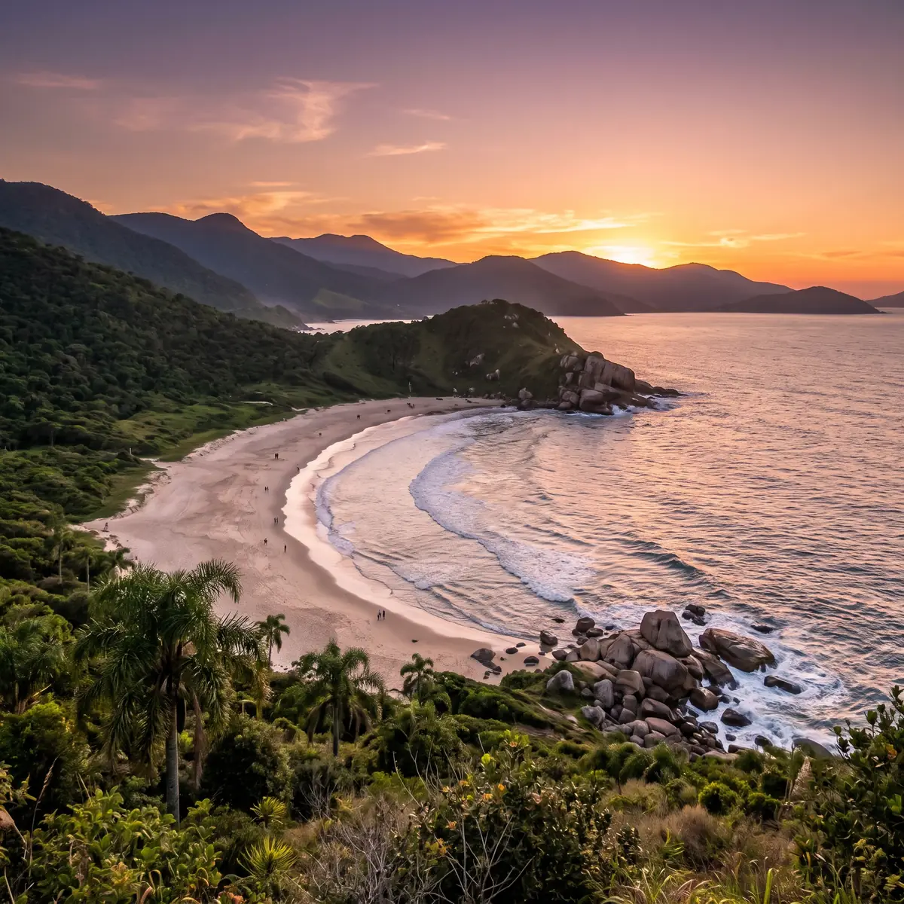
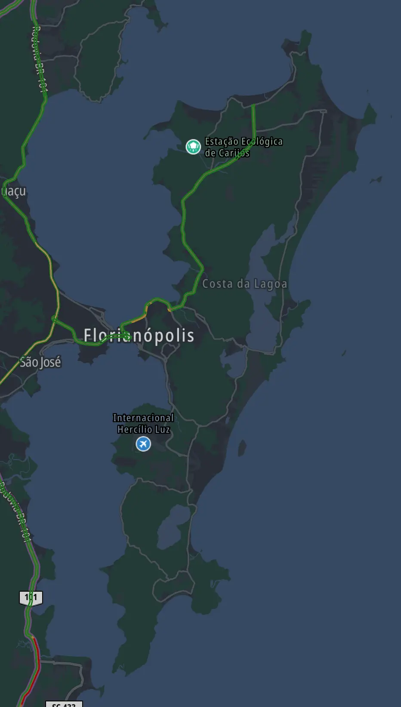
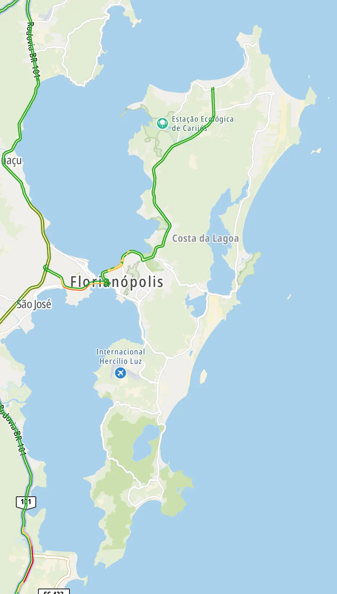

<meta charset="utf-8">
<title>SC Explorer Telas</title>
<meta name="claude:viewport-fit-sides" content="cover">
<link rel="preconnect" href="https://fonts.googleapis.com">
<link rel="stylesheet" href="https://fonts.googleapis.com/css2?family=Plus+Jakarta+Sans:ital,wght@0,500;0,600;0,700;0,800;1,800&family=Inter:wght@400;500;600;700&display=swap">
<style>
/* Layout: prancha com barra de controle fixa (idioma do app + tema); telas do app primeiro, sistema de marca depois. */
:root{
  --fundo:#040B15; --sup:#0A1A2C; --sup-2:#10263D; --borda:rgba(255,255,255,.08);
  --texto:#EEF4FA; --texto-2:#A9BCCF; --texto-3:#6F849B;
  --lagoa:#1FE0BE; --ceu:#46C2FF; --coral:#FF7A59; --sol:#FFD166; --sobre-lagoa:#03201C;
  --f-titulo:"Plus Jakarta Sans",ui-sans-serif,system-ui,sans-serif;
  --f-texto:"Inter",ui-sans-serif,system-ui,sans-serif;
  color-scheme:dark;
}
@media (prefers-color-scheme: light){:root:not([data-theme="dark"]){
  --fundo:#F6F2EB; --sup:#FFFFFF; --sup-2:#EEF2F5; --borda:rgba(10,27,46,.10);
  --texto:#0A1B2E; --texto-2:#3F5368; --texto-3:#6A7C8F;
  --lagoa:#0B9C86; --ceu:#1C7FD1; --coral:#E85D3A; --sol:#B97F00; --sobre-lagoa:#FFFFFF; color-scheme:light}}
:root[data-theme="light"]{
  --fundo:#F6F2EB; --sup:#FFFFFF; --sup-2:#EEF2F5; --borda:rgba(10,27,46,.10);
  --texto:#0A1B2E; --texto-2:#3F5368; --texto-3:#6A7C8F;
  --lagoa:#0B9C86; --ceu:#1C7FD1; --coral:#E85D3A; --sol:#B97F00; --sobre-lagoa:#FFFFFF; color-scheme:light}

*{box-sizing:border-box}
body{background:var(--fundo);color:var(--texto);font:15px/1.55 var(--f-texto);-webkit-font-smoothing:antialiased;transition:background-color .3s}
img{display:block}
.wrap{max-width:1240px;margin:0 auto;padding-left:max(16px,env(safe-area-inset-left,0px));padding-right:max(16px,env(safe-area-inset-right,0px));padding-block:28px 72px}
h1,h2,h3{font-family:var(--f-titulo);letter-spacing:-.02em;text-wrap:balance;margin:0}
h2{font-size:clamp(24px,3vw,32px);font-weight:800}
p{margin:0}
.rotulo{font:600 11px/1 var(--f-texto);letter-spacing:.14em;text-transform:uppercase;color:var(--lagoa)}
.sec{display:grid;gap:22px;padding-top:64px}
.sec>*{min-width:0}
.sec-cab{display:grid;gap:10px;max-width:70ch}
.sec-cab p{color:var(--texto-2)}
code,.hex{font:500 12px/1.4 ui-monospace,SFMono-Regular,Menlo,monospace}
.topo-prancha{display:flex;flex-wrap:wrap;gap:14px 28px;align-items:center;justify-content:space-between}
.topo-prancha .lock svg{height:44px;width:auto}
.topo-prancha .meta{font:500 12px var(--f-texto);letter-spacing:.12em;text-transform:uppercase;color:var(--texto-3)}
.lock{display:flex;align-items:center;gap:12px}
.wm{font:italic 800 30px/1 var(--f-titulo);letter-spacing:-.035em;white-space:nowrap;color:var(--texto)}
.wm b{font-weight:800;background:linear-gradient(90deg,#1FE0BE,#46C2FF);-webkit-background-clip:text;background-clip:text;color:transparent}
.intro{display:grid;gap:12px;margin-top:26px;max-width:72ch}
.intro h1{font-size:clamp(30px,4.4vw,46px);font-weight:800;letter-spacing:-.035em}
.intro p{color:var(--texto-2)}
.so-c{display:none}
:root[data-theme="light"] :is(.topo-prancha,.escala) .wm b{background-image:linear-gradient(90deg,#0B9C86,#1C7FD1)}
@media (prefers-color-scheme: light){:root:not([data-theme="dark"]) :is(.topo-prancha,.escala) .wm b{background-image:linear-gradient(90deg,#0B9C86,#1C7FD1)}}
:root[data-theme="light"] .so-e{display:none} :root[data-theme="light"] .so-c{display:block}
@media (prefers-color-scheme: light){:root:not([data-theme="dark"]) .so-e{display:none} :root:not([data-theme="dark"]) .so-c{display:block}}

/* ===== barra de controle ===== */
.controles{position:sticky;top:10px;z-index:30;margin-top:24px;display:flex;flex-wrap:wrap;align-items:center;gap:10px 22px;padding:10px 12px;border-radius:18px;background:color-mix(in srgb,var(--sup) 84%,transparent);border:1px solid var(--borda);backdrop-filter:blur(14px);-webkit-backdrop-filter:blur(14px);box-shadow:0 10px 30px rgba(0,0,0,.16)}
.ctl{display:flex;align-items:center;gap:10px;flex-wrap:wrap;min-width:0}
.ctl>span{font:600 11px var(--f-texto);letter-spacing:.12em;text-transform:uppercase;color:var(--texto-3)}
.seg-ctl{display:flex;gap:3px;padding:3px;border-radius:12px;background:var(--sup-2)}
.seg-ctl button{appearance:none;border:0;background:none;cursor:pointer;display:inline-flex;align-items:center;gap:7px;height:34px;padding:0 12px;border-radius:9px;font:600 13px var(--f-texto);color:var(--texto-2);transition:background-color .2s,color .2s}
.seg-ctl button:hover{color:var(--texto)}
.seg-ctl button .ic{width:16px;height:16px}
.seg-ctl button[aria-pressed="true"]{background:var(--lagoa);color:var(--sobre-lagoa)}
.controles .dica{margin-left:auto;font-size:12.5px;color:var(--texto-3)}
@media (max-width:900px){.controles .dica{display:none}}

/* ===== ícones ===== */
.ic{fill:none;stroke:currentColor;stroke-width:1.8;stroke-linecap:round;stroke-linejoin:round;flex:none}
.ic.grad{stroke:var(--ic-grad,url(#g-ic))}

/* ===== superfícies do app: tokens do tema escuro (padrão) e do claro "Sol forte" ===== */
.app,.app.claro .escuro-fixo{
  --a-fundo:#050D18;--a-vidro:rgba(13,32,52,.62);--a-vidro-forte:rgba(13,32,52,.92);--a-brilho:rgba(255,255,255,.06);--a-realce:rgba(255,255,255,.07);--a-sombra:0 12px 30px rgba(0,0,0,.28);
  --a-borda:rgba(255,255,255,.10);--a-suave:rgba(255,255,255,.06);
  --a-forte:#FFFFFF;--a-texto:#E2EAF2;--a-texto-2:#B3C4D6;--a-texto-3:#7489A0;
  --a-pri:#1FE0BE;--a-sec:#46C2FF;--a-coral:#FF6B57;--a-baixa:#34D399;--a-media:#FFC542;--a-alta:#FF5C5C;--a-sobre-pri:#03201C;
  --a-lateral:#06111E;--a-barra:rgba(7,18,31,.86);--a-nav:#0B1624;--a-nav-campo:#13233A;--a-nav-texto:#7C90A6;--a-nav-bola:#2A3A4E;
  --a-marcador:rgba(5,13,24,.72);--a-mapa-fundo:#0E1A24;--a-mistura:screen;--a-mancha-op:1;--a-credito:rgba(255,255,255,.55);
  --ic-grad:url(#g-ic);--nuvem:url(#g-nuvem);--nuvem-esc:url(#g-nuvem-esc)}
.app.claro{
  --a-fundo:#F3EFE7;--a-vidro:rgba(255,255,255,.76);--a-vidro-forte:rgba(255,255,255,.94);--a-brilho:rgba(255,255,255,.55);--a-realce:rgba(255,255,255,.9);--a-sombra:0 8px 24px rgba(16,38,61,.10);
  --a-borda:rgba(10,27,46,.09);--a-suave:rgba(10,27,46,.06);
  --a-forte:#0A1B2E;--a-texto:#1E3247;--a-texto-2:#43586D;--a-texto-3:#6E8195;
  --a-pri:#0A9A84;--a-sec:#1C7FD1;--a-coral:#E8553F;--a-baixa:#0F9D6B;--a-media:#C7870A;--a-alta:#DC3B3B;--a-sobre-pri:#FFFFFF;
  --a-lateral:#FBF9F5;--a-barra:rgba(255,255,255,.9);--a-nav:#E7E2D9;--a-nav-campo:#FFFFFF;--a-nav-texto:#6E8195;--a-nav-bola:#CFC8BC;
  --a-marcador:rgba(255,255,255,.92);--a-mapa-fundo:#AFD3EE;--a-mistura:normal;--a-mancha-op:.6;--a-credito:rgba(10,27,46,.6);
  --ic-grad:url(#g-ic-c);--nuvem:url(#g-nuvem-c);--nuvem-esc:url(#g-nuvem-esc-c)}
.app{background:var(--a-fundo);color:var(--a-texto);font-family:var(--f-texto);transition:background-color .3s,color .3s}
.app .so-c{display:none} .app .so-e{display:block}
.app.claro .so-c{display:block} .app.claro .so-e{display:none}
.app button{font:inherit}
.app button:focus-visible{outline:2px solid var(--a-pri);outline-offset:2px}
.vidro{background:linear-gradient(180deg,var(--a-brilho),rgba(255,255,255,0) 40%),var(--a-vidro);border:1px solid var(--a-borda);backdrop-filter:blur(18px) saturate(140%);-webkit-backdrop-filter:blur(18px) saturate(140%);box-shadow:var(--a-sombra),inset 0 1px 0 var(--a-realce)}
.foto{position:relative;overflow:hidden}
.foto>img{position:absolute;inset:0;width:100%;height:100%;object-fit:cover}
.lot{display:inline-flex;align-items:center;gap:5px;font:700 11px/1 var(--f-texto)}
.lot .ic{width:14px;height:14px;stroke-width:2}
.lot.baixa{color:var(--a-baixa)} .lot.media{color:var(--a-media)} .lot.alta{color:var(--a-alta)}
.pilula{display:inline-flex;align-items:center;gap:6px;height:24px;padding:0 10px;border-radius:999px;font:700 10.5px var(--f-texto);letter-spacing:.06em;text-transform:uppercase}
.pilula.agora{background:var(--a-coral);color:#fff}
.pilula.est{background:rgba(5,13,24,.55);border:1px solid rgba(255,255,255,.18);color:#E6EEF6;backdrop-filter:blur(8px)}

/* ===== computador ===== */
.palco-desk{position:relative;width:100%;overflow:hidden}
.desk-escala{transform-origin:top left;width:1240px}
.navegador{width:1240px;border-radius:18px;overflow:hidden;border:1px solid var(--a-borda);box-shadow:0 40px 90px rgba(0,0,0,.4)}
.nav-barra{height:38px;background:var(--a-nav);display:flex;align-items:center;gap:8px;padding:0 14px}
.nav-barra i{width:11px;height:11px;border-radius:50%;background:var(--a-nav-bola)}
.nav-barra span{margin-left:16px;height:24px;flex:0 1 420px;border-radius:8px;background:var(--a-nav-campo);color:var(--a-nav-texto);font:500 12px/24px var(--f-texto);padding:0 12px}
.desk{display:grid;grid-template-columns:232px 1fr;min-height:860px}
.lat{background:var(--a-lateral);border-right:1px solid var(--a-borda);padding:22px 14px;display:flex;flex-direction:column;gap:18px}
.lat .lock{padding:0 8px;flex-direction:column;align-items:flex-start;gap:6px}
.lat .lock svg{height:34px;width:auto}
.lat .wm{font-size:24px;color:var(--a-forte)}
.app.claro .lat .wm b{background-image:linear-gradient(90deg,#0B9C86,#1C7FD1)}
.lat .sub{font:500 11px var(--f-texto);color:var(--a-texto-3);letter-spacing:.04em}
.menu{display:grid;gap:2px}
.menu a{display:flex;align-items:center;gap:12px;height:40px;padding:0 12px;border-radius:12px;color:var(--a-texto-2);font:500 13.5px var(--f-texto);text-decoration:none}
.menu a .ic{width:19px;height:19px}
.menu a.on{background:linear-gradient(90deg,rgba(31,224,190,.18),rgba(31,224,190,.04));color:var(--a-forte);box-shadow:inset 2px 0 0 var(--a-pri)}
.menu a.on .ic{color:var(--a-pri)}
.leve{margin-top:auto;border-radius:18px;padding:16px;display:grid;gap:10px}
.leve b{font:800 16px/1.15 var(--f-titulo);color:var(--a-forte)}
.leve p{font-size:12px;color:var(--a-texto-2)}
.leve code{font-size:11.5px;color:var(--a-pri)}
.principal{position:relative;overflow:hidden;padding:0 22px 22px;display:grid;grid-template-rows:auto 1fr;gap:16px}
.capa{margin:0 -22px;height:268px;padding:26px 30px;display:flex;flex-direction:column;justify-content:flex-start;gap:14px}
.capa>img{object-position:50% 62%}
.capa::after{content:"";position:absolute;inset:0;background:linear-gradient(90deg,rgba(4,11,21,.86) 0%,rgba(4,11,21,.45) 46%,rgba(4,11,21,0) 75%),linear-gradient(0deg,var(--a-fundo) 0%,rgba(5,13,24,0) 45%)}
.capa>*:not(img){position:relative;z-index:1}
.capa h1{font:800 44px/1 var(--f-titulo);letter-spacing:-.04em;color:#fff}
.capa .lead{font-size:15px;color:#DCE7F1;margin-top:-6px}
.busca{display:flex;align-items:center;gap:12px;height:48px;width:560px;max-width:100%;padding:0 18px;border-radius:999px;color:var(--a-texto-2);font-size:14px}
.busca .ic{width:20px;height:20px;color:var(--a-forte)}
.atalhos{display:flex;gap:8px;flex-wrap:wrap}
.atalhos span{display:inline-flex;align-items:center;gap:8px;height:36px;padding:0 14px;border-radius:12px;font:600 13px var(--f-texto);color:var(--a-forte)}
.atalhos .ic{width:17px;height:17px}
.topo-dir{position:absolute!important;top:24px;right:24px;display:flex;gap:10px;z-index:2}
.topo-dir .btn{height:42px;border-radius:14px;display:flex;align-items:center;gap:8px;padding:0 14px;color:var(--a-forte);font:600 13px var(--f-texto)}
.topo-dir .redondo{width:42px;padding:0;justify-content:center;position:relative}
.topo-dir .ic{width:19px;height:19px}
.ponto{position:absolute;top:9px;right:10px;width:8px;height:8px;border-radius:50%;background:var(--a-coral);box-shadow:0 0 0 2px var(--a-fundo)}
.grade-desk{display:grid;grid-template-columns:repeat(12,1fr);gap:14px;align-content:start;margin-top:-58px;position:relative;z-index:2}
.card{border-radius:20px;padding:16px 18px;min-width:0;position:relative;overflow:hidden}
.card h3{font:700 15px var(--f-titulo);display:flex;align-items:center;gap:9px;color:var(--a-forte)}
.card h3 .ic{width:19px;height:19px;color:var(--a-pri)}
.card h3 .mais{margin-left:auto;color:var(--a-texto-3)}
.c4{grid-column:span 4}.c3{grid-column:span 3}
.clima-d{display:grid;grid-template-columns:auto 1fr;gap:14px;align-items:center;margin-top:10px}
.clima-d .ico-tempo{width:64px;height:64px}
.clima-d .t{font:700 46px/1 var(--f-titulo);letter-spacing:-.04em;font-variant-numeric:tabular-nums;color:var(--a-forte)}
.clima-d .d{font-size:12.5px;color:var(--a-texto-2)}
.clima-d ul{grid-column:1/-1;list-style:none;margin:4px 0 0;padding:10px 0 0;border-top:1px solid var(--a-borda);display:grid;grid-template-columns:1fr 1fr;gap:6px 14px;font-size:12.5px;color:var(--a-texto-2)}
.clima-d li,.clima-m li{display:flex;align-items:center;gap:7px}
.clima-d li .ic,.clima-m li .ic{width:15px;height:15px;color:var(--a-pri)}
.clima-d li b,.clima-m li b{color:var(--a-forte);font-weight:600}
.alto{color:var(--a-media)!important}
.prev{display:grid;grid-template-columns:repeat(5,1fr);gap:4px;margin-top:14px;text-align:center}
.prev div{display:grid;justify-items:center;gap:6px;font-size:12.5px;color:var(--a-texto-2)}
.prev b{font:700 13px var(--f-titulo);color:var(--a-forte)}
.prev .ico-tempo{width:34px;height:34px}
.prev span{font-variant-numeric:tabular-nums}.prev span em{font-style:normal;color:var(--a-texto-3)}
.transito-d{border:1px solid rgba(255,255,255,.1)}
.transito-d>img{object-position:50% 60%}
.transito-d::after{content:"";position:absolute;inset:0;background:linear-gradient(90deg,rgba(6,16,28,.95) 30%,rgba(6,16,28,.35) 100%)}
.transito-d>*:not(img){position:relative;z-index:1}
.estado{display:flex;align-items:center;gap:10px;margin-top:12px;font:800 22px var(--f-titulo);color:#fff}
.estado i{width:14px;height:14px;border-radius:50%;background:var(--a-media);box-shadow:0 0 0 5px rgba(255,197,66,.18)}
.transito-d p{font-size:12.5px;color:var(--a-texto-2);margin-top:6px;max-width:30ch}
.btn-sec{display:inline-flex;align-items:center;gap:8px;height:34px;padding:0 13px;border-radius:12px;border:1px solid rgba(31,224,190,.45);color:var(--a-pri);font:700 12.5px var(--f-titulo);background:rgba(31,224,190,.06);margin-top:12px}
.btn-sec .ic{width:15px;height:15px}
.lista-ocup{display:grid;gap:9px;margin-top:12px}
.lin-ocup{display:grid;grid-template-columns:48px 1fr auto;gap:12px;align-items:center}
.lin-ocup .mini{width:48px;height:34px;border-radius:8px}
.lin-ocup b{font:600 13px var(--f-texto);color:var(--a-forte);display:block}
.barra{height:4px;border-radius:4px;background:var(--a-suave);margin-top:5px;overflow:hidden}
.barra i{display:block;height:100%;border-radius:4px}
.mapa-caixa{position:relative;border-radius:14px;overflow:hidden;margin-top:12px;background:var(--a-mapa-fundo)}
.mapa-int{position:relative;width:100%;aspect-ratio:932/1643}
.mapa-int>img{position:absolute;inset:0;width:100%;height:100%}
.mancha{position:absolute;border-radius:50%;transform:translate(-50%,-50%);filter:blur(3px);mix-blend-mode:var(--a-mistura);opacity:var(--a-mancha-op)}
.marcador{position:absolute;transform:translate(-50%,-50%);font:700 9.5px var(--f-texto);color:var(--a-forte);background:var(--a-marcador);border:1px solid var(--a-borda);border-radius:6px;padding:2px 6px;white-space:nowrap}
.legenda-mapa{position:absolute;left:10px;bottom:10px;display:flex;align-items:center;gap:8px;font:600 10.5px var(--f-texto);color:var(--a-forte);padding:6px 10px;border-radius:10px}
.legenda-mapa i{width:90px;height:6px;border-radius:6px;background:linear-gradient(90deg,#34D399,#FFC542,#FF8A3D,#FF4D4D)}
.creditos{position:absolute;right:8px;bottom:6px;font:500 9px var(--f-texto);color:var(--a-credito)}
.trecho{display:grid;grid-template-columns:36px 1fr auto;gap:12px;align-items:center;padding:10px 0;border-top:1px solid var(--a-borda)}
.trecho:first-of-type{border-top:0}
.trecho .q{width:36px;height:36px;border-radius:11px;display:grid;place-items:center;background:var(--a-suave)}
.trecho .q .ic{width:18px;height:18px}
.trecho b{font:700 13.5px var(--f-titulo);color:var(--a-forte);display:block}
.trecho small{font-size:11.5px;color:var(--a-texto-3)}
.tag{font:700 11px var(--f-texto);padding:5px 9px;border-radius:999px;white-space:nowrap}
.tag.ok{color:var(--a-baixa);background:rgba(52,211,153,.14)}.tag.mid{color:var(--a-media);background:rgba(255,197,66,.16)}.tag.bad{color:var(--a-alta);background:rgba(255,92,92,.14)}.tag.inf{color:var(--a-sec);background:rgba(70,194,255,.14)}
.roteiro-d{display:grid;gap:10px;margin-top:12px}
.roteiro-d .ft{height:92px;border-radius:14px}
.roteiro-d b{font:800 15px/1.2 var(--f-titulo);color:var(--a-forte);display:block}
.roteiro-d p{font-size:12px;color:var(--a-texto-2);margin-top:5px}
.lista-links{display:grid;margin-top:8px}
.lista-links div{display:grid;grid-template-columns:20px 1fr 14px;gap:11px;align-items:center;padding:9px 0;border-top:1px solid var(--a-borda);font-size:12.5px;color:var(--a-texto)}
.lista-links div:first-child{border-top:0}
.lista-links .ic{width:18px;height:18px;color:var(--a-texto-2)}
.lista-links .ic.seta{width:14px;height:14px;color:var(--a-texto-3)}

/* ===== celular ===== */
.palco-cel{display:grid;grid-template-columns:auto 1fr;gap:36px;align-items:start}
.cel{width:372px;max-width:100%;border-radius:54px;padding:11px;background:linear-gradient(160deg,#3A4656,#0B1119 40%,#1C2632);box-shadow:0 40px 90px rgba(0,0,0,.45),inset 0 0 0 1px rgba(255,255,255,.06)}
.tela{border-radius:44px;overflow:hidden;position:relative;height:790px}
.ilha-din{position:absolute;top:11px;left:50%;transform:translateX(-50%);width:112px;height:32px;border-radius:20px;background:#000;z-index:5}
.status{position:absolute;top:0;left:0;right:0;height:52px;display:flex;justify-content:space-between;align-items:center;padding:4px 30px 0;font:600 14px var(--f-texto);color:var(--a-forte);z-index:4}
.status.sf{color:#fff}
.status .sig{display:flex;gap:3px;align-items:flex-end}
.status .sig i{width:4px;border-radius:2px;background:currentColor}
.heroi{height:356px}
.heroi>img{object-position:50% 40%}
.heroi::after{content:"";position:absolute;inset:0;background:linear-gradient(180deg,rgba(5,13,24,.55) 0%,rgba(5,13,24,0) 26%,rgba(5,13,24,.1) 55%,var(--a-fundo) 100%)}
.app.claro .heroi::after{background:linear-gradient(180deg,rgba(5,13,24,.5) 0%,rgba(5,13,24,0) 24%,rgba(5,13,24,.2) 50%,rgba(5,13,24,.62) 86%,var(--a-fundo) 100%)}
.heroi>*:not(img){position:relative;z-index:1}
.cab-cel{position:absolute!important;top:56px;left:18px;right:18px;display:grid;grid-template-columns:44px 1fr 44px;align-items:center}
.cab-cel .marca{display:grid;justify-items:center;gap:2px}
.cab-cel .marca .lock{gap:8px}
.cab-cel .marca .lock svg{height:21px;width:auto}
.cab-cel .wm{font-size:23px;color:#fff;text-shadow:0 2px 14px rgba(0,0,0,.35)}
.cab-cel .marca small{font:500 12.5px var(--f-texto);color:rgba(255,255,255,.88);letter-spacing:.02em}
.btn-c{width:42px;height:42px;border-radius:14px;display:grid;place-items:center;color:var(--a-forte);position:relative}
.btn-c .ic{width:21px;height:21px}
.btn-c.idi{font:800 11.5px var(--f-texto);letter-spacing:.04em}
.ola{position:absolute!important;left:22px;right:22px;bottom:30px;color:#fff;text-shadow:0 2px 16px rgba(0,0,0,.45)}
.app.claro .ola{bottom:44px}
.ola h1{font:800 31px/1.05 var(--f-titulo);letter-spacing:-.035em}
.ola p{font-size:14.5px;line-height:1.4;color:rgba(255,255,255,.92);margin-top:7px;max-width:28ch}
.corpo{padding:0 16px 104px;display:grid;gap:12px;margin-top:-16px;position:relative;z-index:2}
.busca-c{height:50px;border-radius:999px;display:flex;align-items:center;gap:12px;padding:0 18px;color:var(--a-texto-2);font-size:14.5px}
.busca-c .ic{width:21px;height:21px;color:var(--a-forte)}
.clima-m{border-radius:22px;padding:14px 16px;display:grid;grid-template-columns:1fr auto;gap:10px;align-items:center}
.clima-m .ag{font-size:12.5px;color:var(--a-texto-2);line-height:1.3;max-width:12ch}
.clima-m .t{font:700 50px/1 var(--f-titulo);letter-spacing:-.045em;font-variant-numeric:tabular-nums;margin-top:4px;color:var(--a-forte)}
.clima-m .tt{display:flex;align-items:flex-end;gap:6px}
.clima-m .tt .ico-tempo{width:58px;height:58px;margin-bottom:-4px}
.clima-m .d{font-size:12px;color:var(--a-texto-2);margin-top:4px}
.clima-m ul{list-style:none;margin:0;padding:0 0 0 14px;border-left:1px solid var(--a-borda);display:grid;gap:7px;font-size:12px;color:var(--a-texto-2)}
.tiles{display:grid;grid-template-columns:repeat(4,minmax(0,1fr));gap:9px}
.tile{border-radius:18px;padding:13px 6px 11px;display:grid;justify-items:center;align-content:start;gap:8px;text-align:center;font:600 11.5px/1.18 var(--f-texto);color:var(--a-forte)}
.tile .ic{width:30px;height:30px;stroke-width:1.6}
.banner{height:112px;border-radius:20px;display:flex;align-items:center;gap:8px;padding:0 14px 0 128px;border:1px solid var(--a-borda);background:linear-gradient(90deg,rgba(13,32,52,.2),var(--a-vidro-forte) 42%)}
.banner>img{width:150px!important;right:auto!important;-webkit-mask-image:linear-gradient(90deg,#000 55%,transparent);mask-image:linear-gradient(90deg,#000 55%,transparent)}
.banner>*:not(img){position:relative;z-index:1}
.banner .txt{display:grid;gap:5px;flex:1;min-width:0}
.banner b{font:800 17px/1.15 var(--f-titulo);color:var(--a-forte)}
.banner small{font-size:12px;color:var(--a-texto-2);line-height:1.35}
.banner .ic.seta{width:22px;height:22px;color:var(--a-forte)}
.sec-c{display:flex;justify-content:space-between;align-items:baseline;margin-top:4px}
.sec-c h3{font:800 20px var(--f-titulo);letter-spacing:-.025em;color:var(--a-forte)}
.sec-c a{font:600 13px var(--f-texto);color:var(--a-forte);text-decoration:none;display:flex;align-items:center;gap:2px}
.sec-c a .ic{width:15px;height:15px}
.hoje{display:grid;grid-auto-flow:column;grid-auto-columns:138px;gap:10px;overflow:hidden;margin-right:-16px}
.hoje .c{height:150px;border-radius:18px;border:1px solid rgba(255,255,255,.1);padding:10px;display:flex;flex-direction:column;justify-content:space-between}
.hoje .c::after{content:"";position:absolute;inset:0;background:linear-gradient(180deg,rgba(5,13,24,.25),rgba(5,13,24,0) 35%,rgba(5,13,24,.85))}
.hoje .c>*:not(img){position:relative;z-index:1}
.hoje .lotm{align-self:flex-start;display:flex;gap:5px;align-items:center;font:600 10.5px var(--f-texto);color:#fff;padding:5px 8px;border-radius:10px;background:rgba(5,13,24,.55);backdrop-filter:blur(8px)}
.hoje>.c>b{font:800 14px/1.15 var(--f-titulo);color:#fff}
.abas{position:absolute;left:0;right:0;bottom:0;height:88px;padding:8px 10px 24px;display:grid;grid-template-columns:repeat(5,1fr);background:var(--a-barra);border-top:1px solid var(--a-borda);backdrop-filter:blur(18px);-webkit-backdrop-filter:blur(18px);z-index:4}
.aba{display:grid;justify-items:center;align-content:center;gap:4px;font:600 11px var(--f-texto);color:var(--a-texto-3)}
.aba .ic{width:24px;height:24px}
.aba.on{color:var(--a-pri)}
.abas::after{content:"";position:absolute;bottom:8px;left:50%;transform:translateX(-50%);width:128px;height:5px;border-radius:5px;background:var(--a-forte);opacity:.85}

/* telas pequenas */
.minis{display:grid;grid-template-columns:repeat(3,minmax(0,1fr));gap:18px}
.minis.seis{grid-template-columns:repeat(3,minmax(0,284px));justify-content:center;gap:28px 40px}
.mcel{border-radius:34px;padding:7px;background:linear-gradient(160deg,#334050,#0B1119 45%,#1A2430);box-shadow:0 24px 50px rgba(0,0,0,.4);min-width:0}
.mtela{border-radius:28px;overflow:hidden;position:relative;height:500px;display:flex;flex-direction:column}
.mtela .status{height:38px;font-size:11.5px;padding:2px 22px 0}
.mtela .ilha-din{top:8px;width:74px;height:22px}
.mcab{display:flex;align-items:center;gap:10px;padding:40px 14px 10px;font:700 15px var(--f-titulo);color:var(--a-forte)}
.mcab .ic{width:19px;height:19px}
.mcab .dir{margin-left:auto}
.seg{display:grid;grid-template-columns:1fr 1fr;gap:4px;margin:0 12px;padding:3px;border-radius:12px;background:var(--a-suave);font:600 11.5px var(--f-texto);text-align:center}
.seg span{padding:7px 0;border-radius:9px;color:var(--a-texto-2)}
.seg .on{background:var(--a-pri);color:var(--a-sobre-pri)}
.chips{display:flex;gap:6px;padding:10px 12px 4px;overflow:hidden}
.chips span{flex:none;height:26px;padding:0 11px;border-radius:999px;display:flex;align-items:center;font:600 10.5px var(--f-texto);background:var(--a-suave);border:1px solid var(--a-borda);color:var(--a-texto-2)}
.chips .on{background:var(--a-pri);color:var(--a-sobre-pri);border-color:transparent}
.mlista{display:grid;gap:7px;padding:8px 12px}
.mlin{display:grid;grid-template-columns:44px minmax(0,1fr) auto 10px;gap:9px;align-items:center;padding:7px;border-radius:14px}
.mlin .mini{width:44px;height:38px;border-radius:10px}
.mlin b{font:700 12px/1.2 var(--f-titulo);color:var(--a-forte);display:block}
.mlin small{font-size:10px;color:var(--a-texto-3)}
.mlin .lotv{display:grid;justify-items:center;gap:2px;font:700 10px var(--f-texto)}
.mlin .lotv .ic{width:16px;height:16px}
.mlin .ic.seta{width:12px;height:12px;color:var(--a-texto-3)}
.mlin .tag{font-size:9.5px;padding:4px 7px}
.mapa-m{position:relative;flex:1;margin:10px 12px 12px;border-radius:18px;overflow:hidden;background:var(--a-mapa-fundo)}
.mapa-m .mapa-int{position:absolute;left:0;right:0}
.sit{position:absolute;left:10px;right:10px;bottom:10px;border-radius:14px;padding:10px 12px;display:grid;grid-template-columns:24px minmax(0,1fr) auto;gap:10px;align-items:center;z-index:2}
.sit .ic{width:22px;height:22px;color:var(--a-forte)}
.sit b{font:700 12px var(--f-titulo);color:var(--a-forte);display:block}
.sit small{font-size:10px;color:var(--a-texto-2);line-height:1.3;display:block}
.dias{display:grid;grid-template-columns:repeat(4,1fr);gap:6px;padding:4px 12px 10px}
.dias span{border-radius:12px;padding:7px 0;text-align:center;font:700 11.5px/1.1 var(--f-titulo);background:var(--a-suave);color:var(--a-forte)}
.dias span small{display:block;font:500 9.5px var(--f-texto);color:var(--a-texto-3);margin-top:2px}
.dias .on{background:var(--a-pri);color:var(--a-sobre-pri)}.dias .on small{color:var(--a-sobre-pri);opacity:.75}
.rcard{margin:0 12px;border-radius:18px;overflow:hidden}
.rcard .ft{height:122px;display:flex;flex-direction:column;justify-content:flex-end;padding:10px 12px;gap:4px}
.rcard .ft::after{content:"";position:absolute;inset:0;background:linear-gradient(180deg,rgba(5,13,24,0) 30%,rgba(5,13,24,.92))}
.rcard .ft>*:not(img){position:relative;z-index:1}
.rcard .sug{align-self:flex-start;font:700 9.5px var(--f-texto);padding:3px 8px;border-radius:999px;background:var(--a-baixa);color:var(--a-sobre-pri)}
.rcard h4{margin:0;font:800 16px var(--f-titulo);color:#fff}
.rcard .meta-r{font-size:9.5px;color:#C3D1DE;display:flex;gap:8px;flex-wrap:wrap}
.linha-t{display:grid;padding:8px 12px 10px}
.linha-t div{display:grid;grid-template-columns:38px 10px minmax(0,1fr) 10px;gap:8px;align-items:center;font-size:11px;color:var(--a-texto);padding:6px 0}
.linha-t time{font:700 11px var(--f-texto);font-variant-numeric:tabular-nums;color:var(--a-forte)}
.linha-t i{width:8px;height:8px;border-radius:50%;background:var(--a-pri);box-shadow:0 0 0 3px rgba(31,224,190,.2)}
.linha-t .ic{width:10px;height:10px;color:var(--a-texto-3)}
.chuva-topo{height:178px;flex:none;display:flex;flex-direction:column;justify-content:flex-end;padding:0 14px 12px;gap:4px}
.chuva-topo::after{content:"";position:absolute;inset:0;background:linear-gradient(180deg,rgba(5,13,24,.35),rgba(5,13,24,.2) 30%,var(--a-fundo))}
.app.claro .chuva-topo::after{background:linear-gradient(180deg,rgba(5,13,24,.35),rgba(5,13,24,.15) 30%,rgba(5,13,24,.82))}
.chuva-topo>*:not(img){position:relative;z-index:1}
.chuva-topo>.ic{width:26px;height:26px;color:#fff}
.chuva-topo h4{margin:0;font:800 18px var(--f-titulo);color:#fff}
.chuva-topo p{font-size:10.5px;color:#C3D1DE;line-height:1.35}
.opc{display:grid;gap:7px;padding:10px 12px 12px}
.opc div{display:grid;grid-template-columns:24px minmax(0,1fr) 12px;gap:10px;align-items:center;padding:9px 10px;border-radius:14px}
.opc .ic{width:20px;height:20px;color:var(--a-forte)}
.opc .ic.seta{width:12px;height:12px;color:var(--a-texto-3)}
.opc b{font:700 11.5px var(--f-titulo);color:var(--a-forte);display:block}
.opc small{font-size:9.5px;color:var(--a-texto-3)}
.dicas-l{display:grid;gap:7px;padding:10px 12px}
.dicas-l div{display:grid;grid-template-columns:58px minmax(0,1fr) 12px;gap:10px;align-items:center;padding:6px;border-radius:14px}
.dicas-l .mini{width:58px;height:44px;border-radius:10px}
.dicas-l .dq{width:58px;height:44px;border-radius:10px;display:grid;place-items:center;background:linear-gradient(135deg,rgba(31,224,190,.25),rgba(70,194,255,.15))}
.dicas-l .dq .ic{width:24px;height:24px;color:var(--a-pri)}
.dicas-l b{font:700 11.5px/1.25 var(--f-titulo);color:var(--a-forte)}
.dicas-l .ic.seta{width:12px;height:12px;color:var(--a-texto-3)}
.leg-mini{font-size:13px;color:var(--texto-3);text-align:center;margin-top:10px;text-wrap:balance}

/* novas telas: boas-vindas */
.bv-foto{flex:1;display:grid;place-items:center;padding-top:26px}
.bv-foto>img{object-position:50% 35%}
.bv-foto::after{content:"";position:absolute;inset:0;background:linear-gradient(180deg,rgba(5,13,24,.55),rgba(5,13,24,.1) 45%,rgba(5,13,24,.5))}
.bv-foto>*:not(img){position:relative;z-index:1}
.bv-marca{display:grid;justify-items:center;gap:6px;text-align:center}
.bv-marca svg{width:92px;height:auto}
.bv-marca .wm{font-size:27px;color:#fff;text-shadow:0 2px 14px rgba(0,0,0,.35)}
.bv-marca small{font:500 10.5px var(--f-texto);color:rgba(255,255,255,.88);letter-spacing:.06em}
.bv-folha{margin-top:-22px;position:relative;z-index:2;background:var(--a-fundo);border-radius:24px 24px 0 0;padding:15px 13px 14px;display:grid;gap:7px;box-shadow:0 -1px 0 var(--a-borda)}
.bv-tit{font:800 16px var(--f-titulo);color:var(--a-forte);text-align:center}
.op{appearance:none;border:0;cursor:pointer;display:grid;grid-template-columns:28px minmax(0,1fr) 16px;align-items:center;gap:8px;height:36px;padding:0 10px;border-radius:12px;font:600 12.5px var(--f-texto);color:var(--a-forte);text-align:left;width:100%}
.op .cod{font:800 9.5px var(--f-texto);letter-spacing:.06em;color:var(--a-texto-2);background:var(--a-suave);border-radius:7px;height:21px;display:grid;place-items:center}
.op .ic{width:16px;height:16px;color:var(--a-pri);opacity:0}
.op[aria-pressed="true"]{box-shadow:inset 0 0 0 1.5px var(--a-pri)}
.op[aria-pressed="true"] .ic{opacity:1}
.op[aria-pressed="true"] .cod{background:var(--a-pri);color:var(--a-sobre-pri)}
.bv-tema{display:grid;grid-template-columns:1fr 1fr;gap:7px}
.bv-tema .op{grid-template-columns:16px minmax(0,1fr);justify-items:start}
.bv-tema .op .ic{opacity:1;color:var(--a-texto-2)}
.bv-tema .op[aria-pressed="true"] .ic{color:var(--a-pri)}
.btn-pri{display:flex;align-items:center;justify-content:center;gap:8px;height:40px;border-radius:13px;background:linear-gradient(90deg,var(--a-pri),var(--a-sec));color:var(--a-sobre-pri);font:800 13px var(--f-titulo)}
.btn-pri .ic{width:16px;height:16px}
.bv-sub{font-size:9.5px;color:var(--a-texto-3);text-align:center}

/* novas telas: detalhe da praia */
.det-foto{height:184px;flex:none;display:flex;flex-direction:column;justify-content:space-between;padding:40px 12px 12px}
.det-foto::after{content:"";position:absolute;inset:0;background:linear-gradient(180deg,rgba(5,13,24,.5) 0%,rgba(5,13,24,0) 38%,rgba(5,13,24,.85) 100%)}
.det-foto>*:not(img){position:relative;z-index:1}
.det-bt{display:flex;justify-content:space-between}
.det-bt .btn-c{width:34px;height:34px;border-radius:11px}
.det-bt .ic{width:17px;height:17px}
.det-tit{display:grid;gap:5px;justify-items:start}
.det-tit h4{margin:0;font:800 22px/1 var(--f-titulo);color:#fff;letter-spacing:-.03em}
.det-tit small{font-size:10.5px;color:rgba(255,255,255,.88)}
.det-corpo{display:grid;gap:7px;padding:10px 12px}
.det-card{border-radius:16px;padding:10px 12px}
.det-cab{display:flex;justify-content:space-between;align-items:center;gap:8px}
.det-cab b{font:700 12px var(--f-titulo);color:var(--a-forte)}
.det-cab small{font-size:9.5px;color:var(--a-texto-3)}
.horas{display:grid;grid-template-columns:repeat(13,minmax(0,1fr));gap:3px;align-items:end;height:56px;margin-top:8px}
.horas i{display:block;border-radius:3px 3px 1px 1px;min-height:4px}
.horas i.fut{opacity:.42}
.horas i.ag{box-shadow:0 0 0 2px var(--a-fundo),0 0 0 3.5px var(--a-forte)}
.eixo{display:flex;justify-content:space-between;font:600 9px var(--f-texto);color:var(--a-texto-3);margin-top:5px}
.det-pico{font-size:9.5px;color:var(--a-texto-3);margin-top:4px}
.det-dados{display:grid;grid-template-columns:repeat(4,minmax(0,1fr));gap:6px}
.det-dados>div{border-radius:13px;padding:8px 2px;display:grid;justify-items:center;gap:2px;text-align:center;min-width:0}
.det-dados .ic{width:16px;height:16px;color:var(--a-pri)}
.det-dados b{font:700 13px var(--f-titulo);color:var(--a-forte);white-space:nowrap}
.det-dados small{font-size:9px;color:var(--a-texto-3);white-space:nowrap}
.det-ima{border-radius:13px;padding:8px 10px;display:grid;grid-template-columns:20px minmax(0,1fr) auto;gap:9px;align-items:center}
.det-ima .ic{width:18px;height:18px;color:var(--a-baixa)}
.det-ima b{font:700 11.5px var(--f-titulo);color:var(--a-forte);display:block}
.det-ima small{font-size:9.5px;color:var(--a-texto-3)}

/* novas telas: mar e maré */
.mar-card{margin:8px 12px 0;border-radius:16px;padding:10px 12px}
.mare{width:100%;height:auto;display:block;margin-top:4px;overflow:visible}
.mare .area{fill:var(--a-sec);opacity:.16}
.mare .linha{fill:none;stroke:var(--a-sec);stroke-width:2.2;stroke-linecap:round}
.mare .agora-l{stroke:var(--a-texto-3);stroke-width:1;stroke-dasharray:3 3}
.mare .pt{fill:var(--a-forte);stroke:var(--a-fundo);stroke-width:2}
.mare text{font:700 8.5px var(--f-texto);fill:var(--a-texto-2)}
.mare-ev{display:grid;grid-template-columns:1fr 1fr;gap:6px;margin-top:6px}
.mare-ev div{border-radius:10px;background:var(--a-suave);padding:6px 8px;display:grid;gap:1px}
.mare-ev small{font-size:9px;color:var(--a-texto-3)}
.mare-ev b{font:700 11.5px var(--f-titulo);color:var(--a-forte);font-variant-numeric:tabular-nums}
.tri{display:grid;grid-template-columns:repeat(3,minmax(0,1fr));gap:6px;margin:8px 12px 0}
.tri>div{border-radius:13px;padding:8px;display:grid;gap:3px;min-width:0}
.tri small{font-size:9px;color:var(--a-texto-3);display:flex;align-items:center;gap:4px}
.tri .ic{width:13px;height:13px;color:var(--a-pri)}
.tri b{font:700 11.5px var(--f-titulo);color:var(--a-forte);white-space:nowrap;font-variant-numeric:tabular-nums}
.lua{width:13px;height:13px;border-radius:50%;background:radial-gradient(circle at 70% 50%,#F4EBD0 62%,transparent 64%),#3A4A5C;flex:none}
.ondas-r{margin:8px 12px 0;border-radius:16px;padding:8px 12px}
.onda{display:grid;grid-template-columns:42px minmax(0,1fr) 38px 52px;gap:8px;align-items:center;padding:5px 0;font-size:10.5px;color:var(--a-texto)}
.onda b{font:700 11px var(--f-titulo);color:var(--a-forte);font-variant-numeric:tabular-nums;text-align:right}
.onda .barra{margin:0}
.onda .tag{font-size:9px;padding:3px 6px;text-align:center}

/* novas telas: avisos */
.avs{display:grid;gap:7px;padding:8px 12px}
.aviso{display:grid;grid-template-columns:30px minmax(0,1fr);gap:9px;padding:9px 10px 9px 12px;border-radius:14px;position:relative}
.aviso::before{content:"";position:absolute;left:0;top:12px;bottom:12px;width:3px;border-radius:0 3px 3px 0;background:var(--cor)}
.aviso .q{width:30px;height:30px;border-radius:10px;display:grid;place-items:center;background:color-mix(in srgb,var(--cor) 16%,transparent);color:var(--cor)}
.aviso .q .ic{width:16px;height:16px}
.aviso b{font:700 11.5px/1.25 var(--f-titulo);color:var(--a-forte);display:block}
.aviso p{font-size:10px;line-height:1.35;color:var(--a-texto-2);margin-top:2px}
.aviso time{font-size:9px;color:var(--a-texto-3);display:block;margin-top:3px}

/* novas telas: explorar */
.busca-m{margin:0 12px;height:38px;border-radius:999px;display:flex;align-items:center;gap:9px;padding:0 14px;font-size:11.5px;color:var(--a-texto-2);flex:none}
.busca-m .ic{width:16px;height:16px;color:var(--a-forte)}
.sub-t{display:flex;justify-content:space-between;align-items:baseline;padding:8px 14px 0;font:800 13px var(--f-titulo);color:var(--a-forte)}
.sub-t small{font:500 10px var(--f-texto);color:var(--a-texto-3)}
.rodape-m{font-size:9px;color:var(--a-texto-3);text-align:center;padding:0 12px 10px;margin-top:auto}

/* novas telas: perfil e ajustes */
.pf{display:grid;gap:10px;padding:2px 12px 12px}
.pf-g{display:grid;gap:6px}
.pf-g>small{font:700 9.5px var(--f-texto);letter-spacing:.12em;text-transform:uppercase;color:var(--a-texto-3);padding-left:2px}
.seg3{display:grid;grid-template-columns:repeat(3,minmax(0,1fr));gap:3px;padding:3px;border-radius:12px;background:var(--a-suave)}
.seg3 button{appearance:none;border:0;background:none;cursor:pointer;text-align:center;padding:7px 0;border-radius:9px;font:600 11px var(--f-texto);color:var(--a-texto-2)}
.seg3 button[aria-pressed="true"]{background:var(--a-pri);color:var(--a-sobre-pri)}
.pf-l{border-radius:14px;padding:2px 10px}
.pf-r{display:grid;grid-template-columns:18px minmax(0,1fr) auto;gap:9px;align-items:center;padding:8px 0;border-top:1px solid var(--a-borda);font-size:11px;color:var(--a-texto)}
.pf-r:first-child{border-top:0}
.pf-r .ic{width:16px;height:16px;color:var(--a-texto-2)}
.pf-r .ic.seta{width:12px;height:12px;color:var(--a-texto-3)}
.pf-r em{font-style:normal;font:700 11px var(--f-texto);color:var(--a-texto-3);display:flex;align-items:center;gap:4px}
.sw{width:30px;height:18px;border-radius:18px;background:var(--a-suave);position:relative;box-shadow:inset 0 0 0 1px var(--a-borda)}
.sw::after{content:"";position:absolute;top:2px;left:2px;width:14px;height:14px;border-radius:50%;background:var(--a-texto-3)}
.sw.on{background:var(--a-pri);box-shadow:none}
.sw.on::after{left:14px;background:#fff}

/* gosto pra tudo */
.combos{display:flex;flex-wrap:wrap;gap:28px 24px;justify-content:center}
.combo{display:grid;gap:12px;justify-items:center}
.combo .caixa{width:276px;height:603px;overflow:hidden;filter:drop-shadow(0 16px 26px rgba(0,0,0,.32))}
.combo .cel{width:372px!important;max-width:none;transform:scale(.7419);transform-origin:top left;box-shadow:inset 0 0 0 1px rgba(255,255,255,.06)}
.combo .leg-mini{margin:0;color:var(--texto-2);font-weight:600}

/* ===== sistema de marca ===== */
.marcas{display:grid;grid-template-columns:repeat(auto-fit,minmax(min(100%,270px),1fr));gap:14px}
.prova{border-radius:22px;padding:30px 22px;display:grid;place-items:center;gap:18px;min-height:190px;border:1px solid var(--borda)}
.sobre-escuro{background:radial-gradient(120% 120% at 20% 0%,#10263D,#050D18 70%)}
.sobre-escuro .wm{color:#EEF4FA}
.sobre-claro{background:#F6F2EB}
.sobre-claro .wm{color:#0A1B2E}
.sobre-claro .wm b{background-image:linear-gradient(90deg,#0B9C86,#1C7FD1)}
.prova .lock svg{height:46px;width:auto}
.prova .leg{font-size:12.5px}
.sobre-escuro .leg{color:#71869D}.sobre-claro .leg{color:#66798C}
.app-ic{width:88px;height:88px;border-radius:22px;display:grid;place-items:center;background:radial-gradient(120% 100% at 30% 0%,#164369,#06111F 72%);box-shadow:0 12px 30px rgba(0,0,0,.35),inset 0 1px 0 rgba(255,255,255,.08)}
.app-ic svg{width:66px;height:auto}
.duas{display:grid;grid-template-columns:repeat(auto-fit,minmax(min(100%,420px),1fr));gap:14px}
.painel{background:var(--sup);border:1px solid var(--borda);border-radius:22px;padding:22px;min-width:0;display:grid;gap:14px;align-content:start}
.painel h3{font-size:17px;font-weight:700}
.painel h4{margin:4px 0 0;font:600 11px var(--f-texto);letter-spacing:.12em;text-transform:uppercase;color:var(--texto-3)}
.amostras{display:grid;grid-template-columns:repeat(4,minmax(0,1fr));gap:10px}
.am{border-radius:14px;overflow:hidden;border:1px solid var(--borda)}
.am i{display:block;height:52px}
.am div{padding:8px 10px;display:grid;gap:1px;background:var(--sup-2)}
.am b{font:700 12.5px var(--f-titulo)}
.am span{font-size:11px;color:var(--texto-3)}
.faixa{display:flex;flex-wrap:wrap;gap:8px}
.pil{display:inline-flex;align-items:center;gap:7px;padding:6px 11px;border-radius:999px;background:var(--sup-2);border:1px solid var(--borda);font-size:12.5px}
.pil i{width:12px;height:12px;border-radius:50%}
.escala{display:grid;gap:10px}
.escala div{display:grid;grid-template-columns:92px minmax(0,1fr);gap:12px;align-items:baseline;border-top:1px solid var(--borda);padding-top:10px}
.escala small{color:var(--texto-3);font:500 12px var(--f-texto)}
.notas{display:grid;grid-template-columns:repeat(auto-fit,minmax(min(100%,260px),1fr));gap:14px}
.nota p{color:var(--texto-2);font-size:14px}
:focus-visible{outline:2px solid var(--lagoa);outline-offset:3px}
@media (max-width:1100px){.palco-cel{grid-template-columns:1fr;justify-items:center}.minis{width:100%}}
@media (max-width:760px){.minis,.minis.seis{grid-template-columns:repeat(2,minmax(0,1fr))}}
@media (max-width:520px){.minis,.minis.seis{grid-template-columns:minmax(0,300px);justify-content:center}.amostras{grid-template-columns:repeat(2,minmax(0,1fr))}.cel{width:100%}}
@media (prefers-reduced-motion:reduce){*{transition:none!important}}
</style>

<svg width="0" height="0" style="position:absolute" aria-hidden="true">
  <defs>
    <linearGradient id="g-ic" x1="2" y1="2" x2="22" y2="22" gradientUnits="userSpaceOnUse"><stop offset="0" stop-color="#7AF5DF"/><stop offset=".5" stop-color="#1FE0BE"/><stop offset="1" stop-color="#46C2FF"/></linearGradient>
    <linearGradient id="g-ic-c" x1="2" y1="2" x2="22" y2="22" gradientUnits="userSpaceOnUse"><stop offset="0" stop-color="#12B89C"/><stop offset=".5" stop-color="#0A9A84"/><stop offset="1" stop-color="#1C7FD1"/></linearGradient>
    <linearGradient id="g-traco" x1="8" y1="0" x2="122" y2="0" gradientUnits="userSpaceOnUse"><stop offset="0" stop-color="#1FE0BE"/><stop offset="1" stop-color="#46C2FF"/></linearGradient>
    <linearGradient id="g-traco-c" x1="8" y1="0" x2="122" y2="0" gradientUnits="userSpaceOnUse"><stop offset="0" stop-color="#0B9C86"/><stop offset="1" stop-color="#1C7FD1"/></linearGradient>
    <linearGradient id="g-sol" x1="0" y1="9" x2="0" y2="23" gradientUnits="userSpaceOnUse"><stop offset="0" stop-color="#FFD166"/><stop offset="1" stop-color="#FF7A59"/></linearGradient>
    <radialGradient id="g-sol-t" cx=".4" cy=".35" r=".7"><stop offset="0" stop-color="#FFE08A"/><stop offset=".7" stop-color="#FFB547"/><stop offset="1" stop-color="#FF9440"/></radialGradient>
    <linearGradient id="g-nuvem" x1="0" y1="0" x2="0" y2="1"><stop offset="0" stop-color="#FFFFFF"/><stop offset="1" stop-color="#C9DCEC"/></linearGradient>
    <linearGradient id="g-nuvem-c" x1="0" y1="0" x2="0" y2="1"><stop offset="0" stop-color="#E2EAF1"/><stop offset="1" stop-color="#A5BBCF"/></linearGradient>
    <linearGradient id="g-nuvem-esc" x1="0" y1="0" x2="0" y2="1"><stop offset="0" stop-color="#C7D6E4"/><stop offset="1" stop-color="#8FA6BC"/></linearGradient>
    <linearGradient id="g-nuvem-esc-c" x1="0" y1="0" x2="0" y2="1"><stop offset="0" stop-color="#B4C4D3"/><stop offset="1" stop-color="#7890A7"/></linearGradient>
    <symbol id="marca" viewBox="0 0 128 72"><circle cx="100" cy="16" r="5.5" fill="url(#g-sol)"/><path d="M8 52 C24 52 33 22 46 13 C53 8 58 25 65 30 C70 26 75 20 82 21 C92 23 98 46 110 48 C116 49 120 46 122 43" fill="none" stroke="url(#g-traco)" stroke-width="6" stroke-linecap="round" stroke-linejoin="round"/><path d="M24 63 C38 59 52 66 66 63 C80 60 94 59 108 63" fill="none" stroke="url(#g-traco)" stroke-width="3.5" stroke-linecap="round" opacity=".55"/></symbol>
    <symbol id="marca-c" viewBox="0 0 128 72"><circle cx="100" cy="16" r="5.5" fill="url(#g-sol)"/><path d="M8 52 C24 52 33 22 46 13 C53 8 58 25 65 30 C70 26 75 20 82 21 C92 23 98 46 110 48 C116 49 120 46 122 43" fill="none" stroke="url(#g-traco-c)" stroke-width="6" stroke-linecap="round" stroke-linejoin="round"/><path d="M24 63 C38 59 52 66 66 63 C80 60 94 59 108 63" fill="none" stroke="url(#g-traco-c)" stroke-width="3.5" stroke-linecap="round" opacity=".55"/></symbol>
    <symbol id="t-sol-nuvem" viewBox="0 0 64 64"><g stroke="#FFC24A" stroke-width="3" stroke-linecap="round"><path d="M24 6v6M8.4 12.4l4.2 4.2M2 28h6M39.6 12.4l-4.2 4.2M46 28h-4"/></g><circle cx="24" cy="28" r="11" fill="url(#g-sol-t)"/><path d="M22 54h28a10 10 0 0 0 1.6-19.9A14 14 0 0 0 25 32.5 10.8 10.8 0 0 0 22 54Z" style="fill:var(--nuvem,#fff)"/></symbol>
    <symbol id="t-sol" viewBox="0 0 64 64"><g stroke="#FFC24A" stroke-width="3.2" stroke-linecap="round"><path d="M32 6v7M32 51v7M6 32h7M51 32h7M13.6 13.6l5 5M45.4 45.4l5 5M13.6 50.4l5-5M45.4 18.6l5-5"/></g><circle cx="32" cy="32" r="13" fill="url(#g-sol-t)"/></symbol>
    <symbol id="t-chuva" viewBox="0 0 64 64"><path d="M18 40h30a10 10 0 0 0 1.6-19.9A14 14 0 0 0 21 18.5 10.8 10.8 0 0 0 18 40Z" style="fill:var(--nuvem-esc,#C7D6E4)"/><g stroke="#46C2FF" stroke-width="3" stroke-linecap="round"><path d="M24 46l-3 8M34 46l-3 8M44 46l-3 8"/></g></symbol>
    <symbol id="i-busca" viewBox="0 0 24 24"><circle cx="11" cy="11" r="7.5"/><path d="m21 21-4.6-4.6"/></symbol>
    <symbol id="i-seta" viewBox="0 0 24 24"><path d="m9 18 6-6-6-6"/></symbol>
    <symbol id="i-voltar" viewBox="0 0 24 24"><path d="m14 19-7-7 7-7"/></symbol>
    <symbol id="i-sino" viewBox="0 0 24 24"><path d="M10.27 21a2 2 0 0 0 3.46 0M3.26 15.33A1 1 0 0 0 4 17h16a1 1 0 0 0 .74-1.67C19.41 13.96 18 12.5 18 8A6 6 0 0 0 6 8c0 4.5-1.41 5.96-2.74 7.33"/></symbol>
    <symbol id="i-pino" viewBox="0 0 24 24"><path d="M20 10c0 5-5.5 10.2-7.4 11.8a1 1 0 0 1-1.2 0C9.5 20.2 4 15 4 10a8 8 0 0 1 16 0"/><circle cx="12" cy="10" r="3"/></symbol>
    <symbol id="i-pessoa" viewBox="0 0 24 24"><circle cx="12" cy="8" r="4.5"/><path d="M20 21a8 8 0 0 0-16 0"/></symbol>
    <symbol id="i-guarda" viewBox="0 0 24 24"><path d="M22 12a10 10 0 0 0-20 0Z"/><path d="M12 12v8a2 2 0 0 0 4 0M12 2v1"/></symbol>
    <symbol id="i-carro" viewBox="0 0 24 24"><path d="M19 17h2c.6 0 1-.4 1-1v-3c0-.9-.7-1.7-1.5-1.9C18.7 10.6 16 10 16 10s-1.3-1.4-2.2-2.3c-.5-.4-1.1-.7-1.8-.7H5c-.6 0-1.1.4-1.4.9l-1.4 2.9A3.7 3.7 0 0 0 2 12v4c0 .6.4 1 1 1h2M9 17h6"/><circle cx="7" cy="17" r="2"/><circle cx="17" cy="17" r="2"/></symbol>
    <symbol id="i-rota" viewBox="0 0 24 24"><circle cx="6" cy="19" r="3"/><path d="M9 19h8.5a3.5 3.5 0 0 0 0-7h-11a3.5 3.5 0 0 1 0-7H15"/><circle cx="18" cy="5" r="3"/></symbol>
    <symbol id="i-chuva" viewBox="0 0 24 24"><path d="M4 14.9A7 7 0 1 1 15.71 8h1.79a4.5 4.5 0 0 1 2.5 8.24M16 14v6M8 14v6M12 16v6"/></symbol>
    <symbol id="i-chama" viewBox="0 0 24 24"><path d="M8.5 14.5A2.5 2.5 0 0 0 11 12c0-1.38-.5-2-1-3-1.07-2.14-.22-4.05 2-6 .5 2.5 2 4.9 4 6.5 2 1.6 3 3.5 3 5.5a7 7 0 1 1-14 0c0-1.150.43-2.29 1-3a2.5 2.5 0 0 0 2.5 2.5z"/></symbol>
    <symbol id="i-info" viewBox="0 0 24 24"><circle cx="12" cy="12" r="10"/><path d="M12 16v-4M12 8h.01"/></symbol>
    <symbol id="i-casa" viewBox="0 0 24 24"><path d="M15 21v-8a1 1 0 0 0-1-1h-4a1 1 0 0 0-1 1v8M3 10a2 2 0 0 1 .71-1.53l7-6a2 2 0 0 1 2.58 0l7 6A2 2 0 0 1 21 10v9a2 2 0 0 1-2 2H5a2 2 0 0 1-2-2z"/></symbol>
    <symbol id="i-mapa" viewBox="0 0 24 24"><path d="M14.1 5.550a2 2 0 0 0 1.8 0l3.65-1.83A1 1 0 0 1 21 4.62v12.76a1 1 0 0 1-.55.9l-4.55 2.27a2 2 0 0 1-1.8 0l-4.2-2.1a2 2 0 0 0-1.8 0l-3.65 1.83A1 1 0 0 1 3 19.38V6.62a1 1 0 0 1 .55-.9L8.1 3.45a2 2 0 0 1 1.8 0zM15 5.76v15M9 3.24v15"/></symbol>
    <symbol id="i-bussola" viewBox="0 0 24 24"><circle cx="12" cy="12" r="10"/><path d="m16.24 7.76-1.8 5.41a2 2 0 0 1-1.27 1.27L7.76 16.24l1.8-5.41a2 2 0 0 1 1.27-1.27z"/></symbol>
    <symbol id="i-gente" viewBox="0 0 24 24"><path d="M16 21v-2a4 4 0 0 0-4-4H6a4 4 0 0 0-4 4v2M22 21v-2a4 4 0 0 0-3-3.870M16 3.130a4 4 0 0 1 0 7.750"/><circle cx="9" cy="7" r="4"/></symbol>
    <symbol id="i-termo" viewBox="0 0 24 24"><path d="M14 4v10.54a4 4 0 1 1-4 0V4a2 2 0 0 1 4 0Z"/></symbol>
    <symbol id="i-sol" viewBox="0 0 24 24"><circle cx="12" cy="12" r="4"/><path d="M12 2v2M12 20v2M4.93 4.93l1.41 1.41M17.66 17.66l1.41 1.41M2 12h2M20 12h2M6.34 17.66l-1.41 1.41M19.07 4.93l-1.41 1.41"/></symbol>
    <symbol id="i-lua" viewBox="0 0 24 24"><path d="M12 3a6 6 0 0 0 9 9 9 9 0 1 1-9-9Z"/></symbol>
    <symbol id="i-globo" viewBox="0 0 24 24"><circle cx="12" cy="12" r="10"/><path d="M12 2a14.5 14.5 0 0 0 0 20 14.5 14.5 0 0 0 0-20M2 12h20"/></symbol>
    <symbol id="i-check" viewBox="0 0 24 24"><path d="M20 6 9 17l-5-5"/></symbol>
    <symbol id="i-navegar" viewBox="0 0 24 24"><path d="M3 11 22 2l-9 19-2-8-8-2z"/></symbol>
    <symbol id="i-nascer" viewBox="0 0 24 24"><path d="M12 2v8M4.93 10.93l1.41 1.41M2 18h2M20 18h2M19.07 10.93l-1.41 1.41M22 22H2M8 6l4-4 4 4M16 18a4 4 0 0 0-8 0"/></symbol>
    <symbol id="i-baixar" viewBox="0 0 24 24"><path d="M12 15V3M7 10l5 5 5-5M5 21h14"/></symbol>
    <symbol id="i-montanha" viewBox="0 0 24 24"><path d="m8 3 4 8 5-5 5 15H2L8 3z"/></symbol>
    <symbol id="i-vento" viewBox="0 0 24 24"><path d="M12.8 19.6A2 2 0 1 0 14 16H2M17.5 8a2.5 2.5 0 1 1 2 4H2M9.8 4.4A2 2 0 1 1 11 8H2"/></symbol>
    <symbol id="i-gota" viewBox="0 0 24 24"><path d="M12 22a7 7 0 0 0 7-7c0-2-1-3.9-3-5.5s-3.5-4-4-6.5c-.5 2.5-2 4.9-4 6.5C6 11.1 5 13 5 15a7 7 0 0 0 7 7z"/></symbol>
    <symbol id="i-calendario" viewBox="0 0 24 24"><rect x="3" y="4" width="18" height="18" rx="2"/><path d="M16 2v4M8 2v4M3 10h18"/></symbol>
    <symbol id="i-talher" viewBox="0 0 24 24"><path d="M3 2v7c0 1.1.9 2 2 2h4a2 2 0 0 0 2-2V2M7 2v20M21 15V2a5 5 0 0 0-5 5v6c0 1.1.9 2 3 2h2Zm0 0v7"/></symbol>
    <symbol id="i-camera" viewBox="0 0 24 24"><path d="M14.5 4h-5L7 7H4a2 2 0 0 0-2 2v9a2 2 0 0 0 2 2h16a2 2 0 0 0 2-2V9a2 2 0 0 0-2-2h-3l-2.5-3z"/><circle cx="12" cy="13" r="3"/></symbol>
    <symbol id="i-mais" viewBox="0 0 24 24"><circle cx="5" cy="12" r="1"/><circle cx="12" cy="12" r="1"/><circle cx="19" cy="12" r="1"/></symbol>
    <symbol id="i-predio" viewBox="0 0 24 24"><path d="M3 22h18M6 18v-7M10 18v-7M14 18v-7M18 18v-7M12 2l8 5H4z"/></symbol>
    <symbol id="i-sacola" viewBox="0 0 24 24"><path d="M6 2 3 6v14a2 2 0 0 0 2 2h14a2 2 0 0 0 2-2V6l-3-4ZM3 6h18M16 10a4 4 0 0 1-8 0"/></symbol>
    <symbol id="i-cafe" viewBox="0 0 24 24"><path d="M10 2v2M14 2v2M6 2v2M16 8a1 1 0 0 1 1 1v8a4 4 0 0 1-4 4H7a4 4 0 0 1-4-4V9a1 1 0 0 1 1-1h14a4 4 0 1 1 0 8h-1"/></symbol>
    <symbol id="i-loja" viewBox="0 0 24 24"><path d="M3 9h18l-1.5-5h-15zM5 9v11h14V9M9 20v-6h6v6"/></symbol>
    <symbol id="i-aviao" viewBox="0 0 24 24"><path d="M17.8 19.2 16 11l3.5-3.5C21 6 21.5 4 21 3c-1-.5-3 0-4.5 1.5L13 8 4.8 6.2c-.5-.1-.9.1-1.1.5l-.3.5c-.2.5-.1 1 .3 1.3L9 12l-2 3H4l-1 1 3 2 2 3 1-1v-3l3-2 3.5 5.3c.3.4.8.5 1.3.3l.5-.2c.4-.3.6-.7.5-1.2z"/></symbol>
    <symbol id="i-onibus" viewBox="0 0 24 24"><path d="M8 6v6M15 6v6M2 12h19.6M18 18h3s.5-1.7.8-2.8c.1-.4.2-.8.2-1.2s-.1-.8-.2-1.2l-1.4-5C20.1 6.8 19.1 6 18 6H4a2 2 0 0 0-2 2v10h3M9 18h5"/><circle cx="7" cy="18" r="2"/><circle cx="16" cy="18" r="2"/></symbol>
    <symbol id="i-saude" viewBox="0 0 24 24"><path d="M11 2a2 2 0 0 0-2 2v5H4a2 2 0 0 0-2 2v2c0 1.1.9 2 2 2h5v5c0 1.1.9 2 2 2h2a2 2 0 0 0 2-2v-5h5a2 2 0 0 0 2-2v-2a2 2 0 0 0-2-2h-5V4a2 2 0 0 0-2-2z"/></symbol>
    <symbol id="i-bandeira" viewBox="0 0 24 24"><path d="M4 22V4a1 1 0 0 1 .4-.8A6 6 0 0 1 8 2c3 0 5 2 7.33 2q2 0 3.07-.8A1 1 0 0 1 20 4v10a1 1 0 0 1-.4.8A6 6 0 0 1 16 16c-3 0-5-2-8-2a6 6 0 0 0-4 1.53"/></symbol>
    <symbol id="i-ondas" viewBox="0 0 24 24"><path d="M2 6c.6.5 1.2 1 2.5 1C7 7 7 5 9.5 5c2.6 0 2.4 2 5 2 2.5 0 2.5-2 5-2 1.3 0 1.9.5 2.5 1M2 12c.6.5 1.2 1 2.5 1 2.5 0 2.5-2 5-2 2.6 0 2.4 2 5 2 2.5 0 2.5-2 5-2 1.3 0 1.9.5 2.5 1M2 18c.6.5 1.2 1 2.5 1 2.5 0 2.5-2 5-2 2.6 0 2.4 2 5 2 2.5 0 2.5-2 5-2 1.3 0 1.9.5 2.5 1"/></symbol>
    <symbol id="i-carteira" viewBox="0 0 24 24"><path d="M19 7V4a1 1 0 0 0-1-1H5a2 2 0 0 0 0 4h15a1 1 0 0 1 1 1v4h-3a2 2 0 0 0 0 4h3a1 1 0 0 0 1-1v-2a1 1 0 0 0-1-1M3 5v14a2 2 0 0 0 2 2h15a1 1 0 0 0 1-1v-4"/></symbol>
    <symbol id="i-lampada" viewBox="0 0 24 24"><path d="M15 14c.2-1 .7-1.7 1.5-2.5 1-.9 1.5-2.2 1.5-3.5A6 6 0 0 0 6 8c0 1 .2 2.2 1.5 3.5.7.7 1.3 1.5 1.5 2.5M9 18h6M10 22h4"/></symbol>
    <symbol id="i-celular" viewBox="0 0 24 24"><rect x="5" y="2" width="14" height="20" rx="3"/><path d="M10 18h4"/></symbol>
    <symbol id="i-coracao" viewBox="0 0 24 24"><path d="M19 14c1.49-1.46 3-3.21 3-5.5A5.5 5.5 0 0 0 16.5 3c-1.76 0-3 .5-4.5 2-1.5-1.5-2.740-2-4.5-2A5.5 5.5 0 0 0 2 8.5c0 2.3 1.5 4.05 3 5.5l7 7Z"/></symbol>
  </defs>
</svg>

<main class="wrap">

  <header class="topo-prancha">
    <div class="lock"><svg viewBox="0 0 128 72" aria-label="Símbolo SC Explorer"><use class="so-e" href="#marca"/><use class="so-c" href="#marca-c"/></svg><div class="wm"><b>SC</b> Explorer</div></div>
    <span class="meta">Identidade e telas · versão 3 · 22/11/2026</span>
  </header>
  <div class="intro">
    <h1>O guia do litoral de Florianópolis, em três idiomas e dois temas</h1>
    <p>O app abre em espanhol, e a pessoa troca para português ou inglês com um toque. Ela também escolhe o tema: escuro, que é o padrão, ou claro, o "Sol forte" feito para usar na praia. Use a barra abaixo: todas as telas desta página mudam juntas. O mapa é real, com a base da TomTom e a camada de trânsito, nas duas versões.</p>
  </div>

  <div class="controles" role="toolbar" aria-label="Ver as telas em outro idioma ou tema">
    <div class="ctl"><span>Idioma do app</span>
      <div class="seg-ctl"><button type="button" data-set-idioma="es" aria-pressed="true">Español</button><button type="button" data-set-idioma="pt" aria-pressed="false">Português</button><button type="button" data-set-idioma="en" aria-pressed="false">English</button></div>
    </div>
    <div class="ctl"><span>Tema</span>
      <div class="seg-ctl"><button type="button" data-set-tema="escuro" aria-pressed="true"><svg class="ic"><use href="#i-lua"/></svg>Escuro</button><button type="button" data-set-tema="claro" aria-pressed="false"><svg class="ic"><use href="#i-sol"/></svg>Claro</button></div>
    </div>
    <span class="dica">As telas de boas-vindas e de perfil também trocam ao toque.</span>
  </div>

  <section class="sec" aria-labelledby="s-desk">
    <div class="sec-cab"><span class="rotulo">No computador</span><h2 id="s-desk">Painel principal</h2></div>
    <div class="palco-desk" id="palco-desk">
      <div class="desk-escala" id="desk-escala">
        <div class="navegador app" role="img" aria-label="Painel principal do SC Explorer no computador">
          <div class="nav-barra"><i></i><i></i><i></i><span>scexplorer.netlify.app</span></div>
          <div class="desk">
            <aside class="lat">
              <div class="lock"><svg class="so-e" viewBox="0 0 128 72" aria-hidden="true"><use href="#marca"/></svg><svg class="so-c" viewBox="0 0 128 72" aria-hidden="true"><use href="#marca-c"/></svg><div class="wm"><b>SC</b> Explorer</div><span class="sub">Florianópolis · Litoral SC</span></div>
              <nav class="menu">
                <a class="on"><svg class="ic"><use href="#i-casa"/></svg>Panel principal</a>
                <a><svg class="ic"><use href="#i-guarda"/></svg>Playas</a>
                <a><svg class="ic"><use href="#i-sol"/></svg>Clima y mar</a>
                <a><svg class="ic"><use href="#i-carro"/></svg>Tránsito</a>
                <a><svg class="ic"><use href="#i-chama"/></svg>Mapa de ocupación</a>
                <a><svg class="ic"><use href="#i-rota"/></svg>Itinerarios</a>
                <a><svg class="ic"><use href="#i-lampada"/></svg>Consejos</a>
                <a><svg class="ic"><use href="#i-info"/></svg>Info local</a>
                <a><svg class="ic"><use href="#i-sino"/></svg>Avisos</a>
                <a><svg class="ic"><use href="#i-coracao"/></svg>Favoritos</a>
              </nav>
              <div class="leve vidro">
                <svg class="ic grad" style="width:28px;height:28px"><use href="#i-celular"/></svg>
                <b>Llevalo en tu celular</b>
                <p>Abrí el enlace en el celular y tocá "Agregar a inicio". Funciona como una app, incluso sin señal.</p>
                <code>scexplorer.netlify.app</code>
              </div>
            </aside>
            <div class="principal">
              <div class="capa foto">
                
                <div class="topo-dir">
                  <span class="btn vidro"><svg class="ic"><use href="#i-pino"/></svg>Florianópolis · SC</span>
                  <span class="btn vidro"><svg class="ic"><use href="#i-globo"/></svg><span class="idi-atual">ES</span></span>
                  <span class="btn redondo vidro"><svg class="ic"><use href="#i-sino"/></svg><i class="ponto"></i></span>
                  <span class="btn redondo vidro"><svg class="ic"><use href="#i-pessoa"/></svg></span>
                </div>
                <h1>Explorá Florianópolis</h1>
                <p class="lead">Playas, tránsito, clima, consejos e itinerarios, actualizados cada 12 minutos.</p>
                <div class="busca vidro"><svg class="ic"><use href="#i-busca"/></svg>¿Qué querés hacer hoy? (playa, mirador, itinerario, restaurante…)</div>
                <div class="atalhos">
                  <span class="vidro"><svg class="ic grad"><use href="#i-guarda"/></svg>Playas</span>
                  <span class="vidro"><svg class="ic grad"><use href="#i-rota"/></svg>Itinerarios</span>
                  <span class="vidro"><svg class="ic grad"><use href="#i-talher"/></svg>Gastronomía</span>
                  <span class="vidro"><svg class="ic grad"><use href="#i-camera"/></svg>Paseos</span>
                  <span class="vidro"><svg class="ic grad"><use href="#i-mais"/></svg>Más</span>
                </div>
              </div>
              <div class="grade-desk">
                <div class="card vidro c4">
                  <h3><svg class="ic"><use href="#i-sol"/></svg>Clima ahora en Florianópolis</h3>
                  <div class="clima-d">
                    <svg class="ico-tempo"><use href="#t-sol-nuvem"/></svg>
                    <div><div class="t">27°</div><div class="d">Parcialmente nublado · máx. 29° mín. 21°</div></div>
                    <ul><li><svg class="ic"><use href="#i-termo"/></svg>Sensación <b>29°</b></li><li><svg class="ic"><use href="#i-vento"/></svg>Viento <b>12 km/h</b></li><li><svg class="ic"><use href="#i-gota"/></svg>Humedad <b>72%</b></li><li><svg class="ic"><use href="#i-sol"/></svg>UV <b class="alto">9 · alto</b></li></ul>
                  </div>
                </div>
                <div class="card vidro c4">
                  <h3><svg class="ic"><use href="#i-calendario"/></svg>Próximos días<svg class="ic mais" style="width:16px;height:16px"><use href="#i-seta"/></svg></h3>
                  <div class="prev">
                    <div><b>Hoy</b><svg class="ico-tempo"><use href="#t-sol-nuvem"/></svg><span>27° <em>21°</em></span></div>
                    <div><b>Lun</b><svg class="ico-tempo"><use href="#t-sol"/></svg><span>29° <em>22°</em></span></div>
                    <div><b>Mar</b><svg class="ico-tempo"><use href="#t-sol"/></svg><span>30° <em>22°</em></span></div>
                    <div><b>Mié</b><svg class="ico-tempo"><use href="#t-sol-nuvem"/></svg><span>27° <em>21°</em></span></div>
                    <div><b>Jue</b><svg class="ico-tempo"><use href="#t-chuva"/></svg><span>24° <em>20°</em></span></div>
                  </div>
                </div>
                <div class="card c4 foto transito-d escuro-fixo">
                  
                  <h3><svg class="ic"><use href="#i-carro"/></svg>Tránsito en la Isla</h3>
                  <div class="estado"><i></i>Flujo moderado</div>
                  <p>Lento en la SC-401 hacia el norte. Puente y Beira-Mar sin demoras.</p>
                  <span class="btn-sec"><svg class="ic"><use href="#i-mapa"/></svg>Ver en el mapa</span>
                </div>

                <div class="card vidro c4">
                  <h3><svg class="ic"><use href="#i-guarda"/></svg>Ocupación de las playas <span style="font:500 11.5px var(--f-texto);color:var(--a-texto-3)">estimación</span></h3>
                  <div class="lista-ocup">
                    <div class="lin-ocup"><span class="mini foto"></span><div><b>Jurerê Internacional</b><div class="barra"><i style="width:84%;background:var(--a-alta)"></i></div></div><span class="lot alta"><svg class="ic"><use href="#i-gente"/></svg>Alta</span></div>
                    <div class="lin-ocup"><span class="mini foto"></span><div><b>Praia Mole</b><div class="barra"><i style="width:58%;background:var(--a-media)"></i></div></div><span class="lot media"><svg class="ic"><use href="#i-gente"/></svg>Media</span></div>
                    <div class="lin-ocup"><span class="mini foto"></span><div><b>Campeche</b><div class="barra"><i style="width:52%;background:var(--a-media)"></i></div></div><span class="lot media"><svg class="ic"><use href="#i-gente"/></svg>Media</span></div>
                    <div class="lin-ocup"><span class="mini foto"></span><div><b>Joaquina</b><div class="barra"><i style="width:78%;background:var(--a-alta)"></i></div></div><span class="lot alta"><svg class="ic"><use href="#i-gente"/></svg>Alta</span></div>
                    <div class="lin-ocup"><span class="mini foto"></span><div><b>Barra da Lagoa</b><div class="barra"><i style="width:26%;background:var(--a-baixa)"></i></div></div><span class="lot baixa"><svg class="ic"><use href="#i-gente"/></svg>Baja</span></div>
                  </div>
                </div>
                <div class="card vidro c4" style="padding-bottom:14px">
                  <h3><svg class="ic"><use href="#i-chama"/></svg>Mapa de ocupación</h3>
                  <div class="mapa-caixa" style="height:236px">
                    <div class="mapa-int" style="position:absolute;left:0;right:0;top:-22%" id="mapa-desk"></div>
                    <div class="legenda-mapa vidro">Baja<i></i>Alta</div>
                    <span class="creditos">© TomTom · © OpenStreetMap</span>
                  </div>
                </div>
                <div class="card vidro c4">
                  <h3><svg class="ic"><use href="#i-rota"/></svg>Tramos <span class="tag ok" style="margin-left:auto">TomTom · 16:40</span></h3>
                  <div style="margin-top:6px">
                    <div class="trecho"><span class="q"><svg class="ic" style="color:var(--a-media)"><use href="#i-carro"/></svg></span><div><b>SC-401 → Jurerê</b><small>Saco Grande · 9,8 km</small></div><span class="tag mid">+11 min</span></div>
                    <div class="trecho"><span class="q"><svg class="ic" style="color:var(--a-baixa)"><use href="#i-carro"/></svg></span><div><b>Puente → Centro</b><small>Pedro Ivo Campos · 1,4 km</small></div><span class="tag ok">Libre</span></div>
                    <div class="trecho"><span class="q"><svg class="ic" style="color:var(--a-baixa)"><use href="#i-carro"/></svg></span><div><b>SC-405 → Campeche</b><small>Rio Tavares · 4,1 km</small></div><span class="tag ok">+2 min</span></div>
                    <div class="trecho"><span class="q"><svg class="ic" style="color:var(--a-alta)"><use href="#i-carro"/></svg></span><div><b>SC-404 Morro da Lagoa</b><small>sentido Lagoa · 3,2 km</small></div><span class="tag bad">+17 min</span></div>
                  </div>
                </div>

                <div class="card vidro c3">
                  <h3><svg class="ic"><use href="#i-calendario"/></svg>Itinerario del día</h3>
                  <div class="roteiro-d"><span class="ft foto"></span><div><b>Un día completo en la Isla</b><p>Playa, mirador, almuerzo típico y atardecer.</p></div></div>
                </div>
                <div class="card vidro c3">
                  <h3><svg class="ic"><use href="#i-chuva"/></svg>Itinerario de lluvia</h3>
                  <div class="roteiro-d"><span class="ft foto"></span><div><b>Floripa con lluvia: ¿qué hacer?</b><p>Mercado Público, museos y cafés bajo techo.</p></div></div>
                </div>
                <div class="card vidro c3">
                  <h3><svg class="ic"><use href="#i-lampada"/></svg>Consejos</h3>
                  <div class="lista-links">
                    <div><svg class="ic"><use href="#i-bandeira"/></svg>Banderas de la playa<svg class="ic seta"><use href="#i-seta"/></svg></div>
                    <div><svg class="ic"><use href="#i-ondas"/></svg>Corriente de retorno: cómo salir<svg class="ic seta"><use href="#i-seta"/></svg></div>
                    <div><svg class="ic"><use href="#i-sol"/></svg>UV alto: horarios y protector<svg class="ic seta"><use href="#i-seta"/></svg></div>
                    <div><svg class="ic"><use href="#i-carteira"/></svg>Pagar con Pix siendo argentino<svg class="ic seta"><use href="#i-seta"/></svg></div>
                  </div>
                </div>
                <div class="card vidro c3">
                  <h3><svg class="ic"><use href="#i-info"/></svg>Info local</h3>
                  <div class="lista-links">
                    <div><svg class="ic"><use href="#i-aviao"/></svg>Aeropuerto: FLN (Hercílio Luz)<svg class="ic seta"><use href="#i-seta"/></svg></div>
                    <div><svg class="ic"><use href="#i-onibus"/></svg>Colectivo: cómo pagar<svg class="ic seta"><use href="#i-seta"/></svg></div>
                    <div><svg class="ic"><use href="#i-saude"/></svg>Emergencias: 193 · 192 · 190<svg class="ic seta"><use href="#i-seta"/></svg></div>
                    <div><svg class="ic"><use href="#i-gota"/></svg>Agua apta: informe del IMA<svg class="ic seta"><use href="#i-seta"/></svg></div>
                  </div>
                </div>
              </div>
            </div>
          </div>
        </div>
      </div>
    </div>
  </section>

  <section class="sec" aria-labelledby="s-cel">
    <div class="sec-cab"><span class="rotulo">No celular</span><h2 id="s-cel">Tela inicial e as telas de cada atalho</h2><p>Tudo o que importa fica ao alcance do polegar: tempo agora, atalhos, lotação e a barra de abas embaixo. Cada atalho abre a sua tela, com o mesmo vidro e a mesma linguagem de foto.</p></div>
    <div class="palco-cel">
      <div id="tela-inicio">
        <div class="cel"><div class="tela app" role="img" aria-label="Tela inicial do SC Explorer no celular">
          <div class="ilha-din"></div>
          <div class="status sf"><span>11:24</span><span class="sig"><i style="height:5px"></i><i style="height:8px"></i><i style="height:11px"></i><i style="height:13px"></i></span></div>
          <div class="heroi foto">
            
            <div class="cab-cel">
              <span class="btn-c idi vidro"><span class="idi-atual">ES</span></span>
              <div class="marca"><div class="lock"><svg viewBox="0 0 128 72" aria-hidden="true"><use href="#marca"/></svg><div class="wm"><b>SC</b> Explorer</div></div><small>Florianópolis · SC</small></div>
              <span class="btn-c vidro"><svg class="ic"><use href="#i-sino"/></svg><i class="ponto" style="top:8px;right:9px"></i></span>
            </div>
            <div class="ola"><h1>¡Hola, explorador!</h1><p>Planeá, explorá y aprovechá lo mejor de Florianópolis.</p></div>
          </div>
          <div class="corpo">
            <div class="busca-c vidro"><svg class="ic"><use href="#i-busca"/></svg>¿Qué querés hacer hoy?</div>
            <div class="clima-m vidro">
              <div><div class="ag">Ahora en Florianópolis</div><div class="tt"><div class="t">27°</div><svg class="ico-tempo"><use href="#t-sol-nuvem"/></svg></div><div class="d">Parcialmente nublado</div></div>
              <ul><li><svg class="ic"><use href="#i-termo"/></svg>Sensación <b>29°</b></li><li><svg class="ic"><use href="#i-sol"/></svg>UV <b class="alto">Alto</b></li><li><svg class="ic"><use href="#i-vento"/></svg>Viento <b>16 km/h</b></li><li><svg class="ic"><use href="#i-gota"/></svg>Humedad <b>72%</b></li></ul>
            </div>
            <div class="tiles">
              <div class="tile vidro"><svg class="ic grad"><use href="#i-guarda"/></svg>Playas y ocupación</div>
              <div class="tile vidro"><svg class="ic grad"><use href="#i-carro"/></svg>Tránsito y tramos</div>
              <div class="tile vidro"><svg class="ic grad"><use href="#i-rota"/></svg>Itinerarios del día</div>
              <div class="tile vidro"><svg class="ic grad"><use href="#i-chuva"/></svg>Día de lluvia</div>
            </div>
            <div class="banner foto">
              
              <div class="txt"><span class="pilula agora" style="justify-self:start">Ahora</span><b>Ocupación de las playas</b><small>Mirá cuáles están más llenas en este momento (estimación).</small></div>
              <svg class="ic seta"><use href="#i-seta"/></svg>
            </div>
            <div class="sec-c"><h3>Hoy en Floripa</h3><a>Ver más<svg class="ic"><use href="#i-seta"/></svg></a></div>
            <div class="hoje">
              <div class="c foto escuro-fixo"><span class="lotm"><span class="lot media"><svg class="ic"><use href="#i-gente"/></svg></span>Ocupación <b style="color:var(--a-media)">Media</b></span><b>Norte de la Isla</b></div>
              <div class="c foto escuro-fixo"><span class="lotm"><span class="lot baixa"><svg class="ic"><use href="#i-gente"/></svg></span>Ocupación <b style="color:var(--a-baixa)">Baja</b></span><b>Sur de la Isla</b></div>
              <div class="c foto escuro-fixo"><span class="lotm"><span class="lot alta"><svg class="ic"><use href="#i-gente"/></svg></span>Ocupación <b style="color:var(--a-alta)">Alta</b></span><b>Este y Lagoa</b></div>
            </div>
          </div>
          <nav class="abas" aria-label="Abas"><span class="aba on"><svg class="ic"><use href="#i-casa"/></svg>Inicio</span><span class="aba"><svg class="ic"><use href="#i-mapa"/></svg>Mapa</span><span class="aba"><svg class="ic"><use href="#i-bussola"/></svg>Explorar</span><span class="aba"><svg class="ic"><use href="#i-sino"/></svg>Avisos</span><span class="aba"><svg class="ic"><use href="#i-pessoa"/></svg>Perfil</span></nav>
        </div></div>
        <p class="leg-mini">Tela inicial</p>
      </div>

      <div class="minis">
        <div><div class="mcel"><div class="mtela app" role="img" aria-label="Tela de praias e lotação">
          <div class="ilha-din"></div><div class="status"><span>11:24</span><span>5G</span></div>
          <div class="mcab"><svg class="ic"><use href="#i-voltar"/></svg>Playas y ocupación</div>
          <div class="seg"><span class="on">Lista</span><span>Mapa</span></div>
          <div class="chips"><span class="on">Todas</span><span>Norte</span><span>Este</span><span>Sur</span><span>Lagoa</span></div>
          <div class="mlista">
            <div class="mlin vidro"><span class="mini foto"></span><div><b>Jurerê Internacional</b><small>Norte · agua apta</small></div><span class="lotv lot alta"><svg class="ic"><use href="#i-gente"/></svg>Alta</span><svg class="ic seta"><use href="#i-seta"/></svg></div>
            <div class="mlin vidro"><span class="mini foto"></span><div><b>Canasvieiras</b><small>Norte · mar calmo</small></div><span class="lotv lot alta"><svg class="ic"><use href="#i-gente"/></svg>Alta</span><svg class="ic seta"><use href="#i-seta"/></svg></div>
            <div class="mlin vidro"><span class="mini foto"></span><div><b>Ingleses</b><small>Norte · olas 0,8 m</small></div><span class="lotv lot media"><svg class="ic"><use href="#i-gente"/></svg>Media</span><svg class="ic seta"><use href="#i-seta"/></svg></div>
            <div class="mlin vidro"><span class="mini foto"></span><div><b>Campeche</b><small>Sur · olas 1,2 m</small></div><span class="lotv lot baixa"><svg class="ic"><use href="#i-gente"/></svg>Baja</span><svg class="ic seta"><use href="#i-seta"/></svg></div>
            <div class="mlin vidro"><span class="mini foto"></span><div><b>Barra da Lagoa</b><small>Este · agua apta</small></div><span class="lotv lot media"><svg class="ic"><use href="#i-gente"/></svg>Media</span><svg class="ic seta"><use href="#i-seta"/></svg></div>
          </div>
        </div></div><p class="leg-mini">Praias: lotação estimada e água</p></div>

        <div><div class="mcel"><div class="mtela app" role="img" aria-label="Tela de trânsito">
          <div class="ilha-din"></div><div class="status"><span>11:24</span><span>5G</span></div>
          <div class="mcab"><svg class="ic"><use href="#i-voltar"/></svg>Tránsito y tramos</div>
          <div class="seg"><span class="on">Mapa</span><span>Tramos</span></div>
          <div class="mapa-m"><div class="mapa-int" style="top:-12%" id="mapa-tr"></div>
            <div class="sit vidro"><svg class="ic"><use href="#i-carro"/></svg><div><b>Situación actual</b><small>SC-401 y Morro da Lagoa lentos.</small></div><span class="tag mid">Moderado</span></div>
          </div>
        </div></div><p class="leg-mini">Trânsito: vias coloridas pela TomTom</p></div>

        <div><div class="mcel"><div class="mtela app" role="img" aria-label="Tela do mapa de lotação">
          <div class="ilha-din"></div><div class="status"><span>11:24</span><span>5G</span></div>
          <div class="mcab"><svg class="ic"><use href="#i-voltar"/></svg>Mapa de ocupación</div>
          <div class="chips" style="padding-top:0"><span class="on">Playas</span><span>Tránsito</span><span>Miradores</span></div>
          <div class="mapa-m"><div class="mapa-int" style="top:-14%" id="mapa-oc"></div>
            <div class="legenda-mapa vidro">Baja<i></i>Alta</div>
            <span class="pilula est" style="position:absolute;top:10px;right:10px">Estimación</span>
          </div>
        </div></div><p class="leg-mini">Lotação: sempre como estimativa</p></div>

        <div><div class="mcel"><div class="mtela app" role="img" aria-label="Tela de roteiros do dia">
          <div class="ilha-din"></div><div class="status"><span>11:24</span><span>5G</span></div>
          <div class="mcab"><svg class="ic"><use href="#i-voltar"/></svg>Itinerarios del día</div>
          <div class="dias"><span class="on">Hoy<small>dom</small></span><span>Mañana<small>lun</small></span><span>Mar<small>24</small></span><span>Mié<small>25</small></span></div>
          <div class="rcard vidro">
            <div class="ft foto escuro-fixo"><span class="sug">Sugerido para hoy</span><h4>Clásico de Floripa</h4><div class="meta-r"><span>1 día</span><span>Ocupación media</span><span>Playa · Gastronomía</span></div></div>
            <div class="linha-t">
              <div><time>09:00</time><i></i>Praia da Joaquina<svg class="ic"><use href="#i-seta"/></svg></div>
              <div><time>12:30</time><i></i>Almuerzo en la Lagoa<svg class="ic"><use href="#i-seta"/></svg></div>
              <div><time>15:30</time><i></i>Mirante da Lagoa<svg class="ic"><use href="#i-seta"/></svg></div>
              <div><time>18:50</time><i></i>Atardecer en Santo Antônio<svg class="ic"><use href="#i-seta"/></svg></div>
            </div>
          </div>
        </div></div><p class="leg-mini">Roteiro: montado por regras, sem IA</p></div>

        <div><div class="mcel"><div class="mtela app" role="img" aria-label="Tela de dia de chuva">
          <div class="ilha-din"></div><div class="status sf"><span>11:24</span><span>5G</span></div>
          <div class="chuva-topo foto escuro-fixo"><svg class="ic"><use href="#i-chuva"/></svg><h4>Día de lluvia</h4><p>Lugares bajo techo: cultura, gastronomía y compras.</p></div>
          <div class="opc">
            <div class="vidro"><svg class="ic"><use href="#i-loja"/></svg><span><b>Mercado Público</b><small>Gastronomía y artesanías</small></span><svg class="ic seta"><use href="#i-seta"/></svg></div>
            <div class="vidro"><svg class="ic"><use href="#i-predio"/></svg><span><b>Museo Histórico de SC</b><small>Palacio Cruz e Sousa, Centro</small></span><svg class="ic seta"><use href="#i-seta"/></svg></div>
            <div class="vidro"><svg class="ic"><use href="#i-sacola"/></svg><span><b>Shoppings</b><small>Beiramar · Villa Romana · Iguatemi</small></span><svg class="ic seta"><use href="#i-seta"/></svg></div>
            <div class="vidro"><svg class="ic"><use href="#i-cafe"/></svg><span><b>Cafés y experiencias</b><small>Elegidos por el equipo</small></span><svg class="ic seta"><use href="#i-seta"/></svg></div>
          </div>
        </div></div><p class="leg-mini">Chuva: aparece sozinho quando a previsão vira</p></div>

        <div><div class="mcel"><div class="mtela app" role="img" aria-label="Tela de dicas e informações">
          <div class="ilha-din"></div><div class="status"><span>11:24</span><span>5G</span></div>
          <div class="mcab"><svg class="ic"><use href="#i-voltar"/></svg>Consejos y info</div>
          <div class="seg" style="grid-template-columns:1fr 1fr 1fr"><span class="on">Consejos</span><span>Info local</span><span>Servicios</span></div>
          <div class="dicas-l">
            <div class="vidro"><span class="mini foto"></span><b>Banderas de la playa: qué significa cada color</b><svg class="ic seta"><use href="#i-seta"/></svg></div>
            <div class="vidro"><span class="dq"><svg class="ic"><use href="#i-ondas"/></svg></span><b>Corriente de retorno: cómo reconocerla y salir</b><svg class="ic seta"><use href="#i-seta"/></svg></div>
            <div class="vidro"><span class="mini foto"></span><b>UV de hoy: mejores horarios de playa</b><svg class="ic seta"><use href="#i-seta"/></svg></div>
            <div class="vidro"><span class="dq"><svg class="ic"><use href="#i-carteira"/></svg></span><b>Pagar con Pix desde Mercado Pago</b><svg class="ic seta"><use href="#i-seta"/></svg></div>
            <div class="vidro"><span class="mini foto"></span><b>Colectivo: líneas a las playas</b><svg class="ic seta"><use href="#i-seta"/></svg></div>
          </div>
        </div></div><p class="leg-mini">Dicas: só as confirmadas, com fonte</p></div>
      </div>
    </div>
  </section>

  <section class="sec" aria-labelledby="s-mais">
    <div class="sec-cab"><span class="rotulo">Mais telas</span><h2 id="s-mais">Da primeira abertura aos ajustes</h2><p>A boas-vindas pede idioma e tema antes de tudo. Depois vêm o detalhe de cada praia, o mar e a maré, os avisos, a busca de lugares e o perfil, onde a pessoa troca idioma e tema quando quiser. Toque nas opções da primeira e da última tela: a página inteira muda junto.</p></div>
    <div class="minis seis">
      <div><div class="mcel"><div class="mtela app" aria-label="Tela de boas-vindas: escolha de idioma e tema">
        <div class="ilha-din"></div><div class="status sf"><span>11:24</span><span>5G</span></div>
        <div class="bv-foto foto escuro-fixo">
          <div class="bv-marca"><svg viewBox="0 0 128 72" aria-hidden="true"><use href="#marca"/></svg><div class="wm"><b>SC</b> Explorer</div><small>Florianópolis · Litoral SC</small></div>
        </div>
        <div class="bv-folha">
          <b class="bv-tit">Elegí tu idioma</b>
          <button type="button" class="op vidro" data-set-idioma="es"><span class="cod">ES</span>Español<svg class="ic"><use href="#i-check"/></svg></button>
          <button type="button" class="op vidro" data-set-idioma="pt"><span class="cod">PT</span>Português<svg class="ic"><use href="#i-check"/></svg></button>
          <button type="button" class="op vidro" data-set-idioma="en"><span class="cod">EN</span>English<svg class="ic"><use href="#i-check"/></svg></button>
          <div class="bv-tema">
            <button type="button" class="op vidro" data-set-tema="escuro"><svg class="ic"><use href="#i-lua"/></svg>Oscuro</button>
            <button type="button" class="op vidro" data-set-tema="claro"><svg class="ic"><use href="#i-sol"/></svg>Claro</button>
          </div>
          <span class="btn-pri">Continuar</span>
          <span class="bv-sub">Podés cambiarlo cuando quieras en Perfil.</span>
        </div>
      </div></div><p class="leg-mini">Boas-vindas: idioma e tema no primeiro toque</p></div>

      <div><div class="mcel"><div class="mtela app" role="img" aria-label="Tela de detalhe de uma praia">
        <div class="ilha-din"></div><div class="status sf"><span>11:24</span><span>5G</span></div>
        <div class="det-foto foto escuro-fixo">
          <div class="det-bt"><span class="btn-c vidro"><svg class="ic"><use href="#i-voltar"/></svg></span><span class="btn-c vidro"><svg class="ic"><use href="#i-coracao"/></svg></span></div>
          <div class="det-tit"><span class="pilula est">Estimación</span><h4>Praia Mole</h4><small>Este de la Isla · surf y senderos</small></div>
        </div>
        <div class="det-corpo">
          <div class="det-card vidro">
            <div class="det-cab"><b>Ocupación por hora</b><span class="lot media"><svg class="ic"><use href="#i-gente"/></svg>Media ahora</span></div>
            <div class="horas" id="horas"></div>
            <div class="eixo"><span>8h</span><span>11h</span><span>14h</span><span>17h</span><span>20h</span></div>
            <p class="det-pico">Pico estimado a las 15h</p>
          </div>
          <div class="det-dados">
            <div class="vidro"><svg class="ic"><use href="#i-ondas"/></svg><b>1,2 m</b><small>Olas</small></div>
            <div class="vidro"><svg class="ic"><use href="#i-termo"/></svg><b>21°</b><small>Agua</small></div>
            <div class="vidro"><svg class="ic"><use href="#i-vento"/></svg><b>16</b><small>km/h NE</small></div>
            <div class="vidro"><svg class="ic"><use href="#i-sol"/></svg><b>9</b><small>UV</small></div>
          </div>
          <div class="det-ima vidro"><svg class="ic"><use href="#i-gota"/></svg><span><b>Apta para baño</b><small>IMA · informe del 18/11</small></span><span class="tag ok">Apta</span></div>
          <span class="btn-pri"><svg class="ic"><use href="#i-navegar"/></svg>Cómo llegar</span>
        </div>
      </div></div><p class="leg-mini">Praia: lotação por hora, mar e água</p></div>

      <div><div class="mcel"><div class="mtela app" role="img" aria-label="Tela de mar e maré">
        <div class="ilha-din"></div><div class="status"><span>11:24</span><span>5G</span></div>
        <div class="mcab"><svg class="ic"><use href="#i-voltar"/></svg>Mar y marea</div>
        <div class="seg" style="grid-template-columns:1fr 1fr 1fr"><span class="on">Hoy</span><span>Mañana</span><span>7 días</span></div>
        <div class="mar-card vidro">
          <div class="det-cab"><b>Marea de hoy</b><small>00 – 24 h</small></div>
          <svg class="mare" id="mare" viewBox="0 0 260 96" aria-hidden="true"></svg>
          <div class="mare-ev"><div><small>Bajamar</small><b>10:25 · 0,2 m</b></div><div><small>Pleamar</small><b>16:37 · 0,8 m</b></div></div>
        </div>
        <div class="tri">
          <div class="vidro"><small><svg class="ic"><use href="#i-nascer"/></svg>Sol</small><b>05:13 · 19:14</b></div>
          <div class="vidro"><small><span class="lua"></span>Luna</small><b>90%</b></div>
          <div class="vidro"><small><svg class="ic"><use href="#i-termo"/></svg>Agua</small><b>21°</b></div>
        </div>
        <div class="ondas-r vidro">
          <div class="det-cab" style="padding:2px 0 4px"><b>Olas por región</b></div>
          <div class="onda"><span>Norte</span><div class="barra"><i style="width:28%;background:var(--a-baixa)"></i></div><b>0,6 m</b><span class="tag ok">Calmo</span></div>
          <div class="onda"><span>Este</span><div class="barra"><i style="width:56%;background:var(--a-media)"></i></div><b>1,2 m</b><span class="tag mid">Moderado</span></div>
          <div class="onda"><span>Sur</span><div class="barra"><i style="width:76%;background:var(--a-alta)"></i></div><b>1,6 m</b><span class="tag bad">Agitado</span></div>
        </div>
      </div></div><p class="leg-mini">Mar e maré: tábua, sol, lua e ondas</p></div>

      <div><div class="mcel"><div class="mtela app" role="img" aria-label="Tela de avisos">
        <div class="ilha-din"></div><div class="status"><span>11:24</span><span>5G</span></div>
        <div class="mcab">Avisos<span class="dir pilula agora" style="height:20px;font-size:9.5px">3 nuevos</span></div>
        <div class="chips" style="padding-top:0"><span class="on">Todos</span><span>Clima</span><span>Playa</span><span>Tránsito</span></div>
        <div class="avs">
          <div class="aviso vidro" style="--cor:var(--a-alta)"><span class="q"><svg class="ic"><use href="#i-sol"/></svg></span><div><b>UV extremo de 11h a 15h</b><p>Índice 11. Buscá sombra y renová el protector cada 2 horas.</p><time>hace 5 min</time></div></div>
          <div class="aviso vidro" style="--cor:var(--a-media)"><span class="q"><svg class="ic"><use href="#i-carro"/></svg></span><div><b>SC-401 lenta hacia el norte</b><p>+11 min hasta Jurerê. Mejor salir después de las 11h.</p><time>hace 12 min</time></div></div>
          <div class="aviso vidro" style="--cor:var(--a-sec)"><span class="q"><svg class="ic"><use href="#i-chuva"/></svg></span><div><b>Lluvia desde las 17h</b><p>Probabilidad del 70%. Mirá el itinerario de lluvia.</p><time>hace 1 h</time></div></div>
          <div class="aviso vidro" style="--cor:var(--a-coral)"><span class="q"><svg class="ic"><use href="#i-ondas"/></svg></span><div><b>Mar agitado en el Sur</b><p>Olas de 1,6 m en Campeche y Armação. Bañate frente al guardavidas.</p><time>hace 2 h</time></div></div>
        </div>
      </div></div><p class="leg-mini">Avisos: só o que mudou, com a hora</p></div>

      <div><div class="mcel"><div class="mtela app" role="img" aria-label="Tela de explorar lugares">
        <div class="ilha-din"></div><div class="status"><span>11:24</span><span>5G</span></div>
        <div class="mcab">Explorar</div>
        <div class="busca-m vidro"><svg class="ic"><use href="#i-busca"/></svg>Playas, miradores, restaurantes…</div>
        <div class="chips"><span class="on">Todo</span><span>Playas</span><span>Miradores</span><span>Gastronomía</span><span>Senderos</span></div>
        <div class="sub-t">Cerca de vos<small>Centro</small></div>
        <div class="mlista">
          <div class="mlin vidro"><span class="mini foto"></span><div><b>Mirante da Lagoa</b><small>Mirador · 6 km</small></div><span class="tag ok">Ideal ahora</span><svg class="ic seta"><use href="#i-seta"/></svg></div>
          <div class="mlin vidro"><span class="mini foto"></span><div><b>Lagoinha do Leste</b><small>Sendero · 1h30 por tramo</small></div><span class="tag mid">Llevá agua</span><svg class="ic seta"><use href="#i-seta"/></svg></div>
          <div class="mlin vidro"><span class="mini foto"></span><div><b>Mercado Público</b><small>Gastronomía · Centro</small></div><span class="tag ok">Abierto</span><svg class="ic seta"><use href="#i-seta"/></svg></div>
          <div class="mlin vidro"><span class="mini foto"></span><div><b>Santo Antônio de Lisboa</b><small>Paseo · atardecer</small></div><span class="tag inf">18:50</span><svg class="ic seta"><use href="#i-seta"/></svg></div>
        </div>
        <p class="rodape-m">Lugares de OpenStreetMap, revisados por el equipo.</p>
      </div></div><p class="leg-mini">Explorar: lugares reais, sem IA</p></div>

      <div><div class="mcel"><div class="mtela app" aria-label="Tela de perfil e ajustes">
        <div class="ilha-din"></div><div class="status"><span>11:24</span><span>5G</span></div>
        <div class="mcab">Perfil y ajustes</div>
        <div class="pf">
          <div class="pf-g"><small>Idioma</small>
            <div class="seg3"><button type="button" data-set-idioma="es">Español</button><button type="button" data-set-idioma="pt">Português</button><button type="button" data-set-idioma="en">English</button></div>
          </div>
          <div class="pf-g"><small>Tema</small>
            <div class="seg3"><button type="button" data-set-tema="escuro" data-modo="pref">Oscuro</button><button type="button" data-set-tema="claro" data-modo="pref">Claro</button><button type="button" data-set-tema="auto" data-modo="pref">Automático</button></div>
          </div>
          <div class="pf-g"><small>Avisos</small>
            <div class="pf-l vidro">
              <div class="pf-r"><svg class="ic"><use href="#i-chuva"/></svg>Lluvia y tormentas<span class="sw on"></span></div>
              <div class="pf-r"><svg class="ic"><use href="#i-sol"/></svg>UV alto<span class="sw on"></span></div>
              <div class="pf-r"><svg class="ic"><use href="#i-carro"/></svg>Tránsito en mis trayectos<span class="sw on"></span></div>
              <div class="pf-r"><svg class="ic"><use href="#i-ondas"/></svg>Mar agitado<span class="sw"></span></div>
            </div>
          </div>
          <div class="pf-l vidro">
            <div class="pf-r"><svg class="ic"><use href="#i-coracao"/></svg>Playas favoritas<em>3<svg class="ic seta"><use href="#i-seta"/></svg></em></div>
            <div class="pf-r"><svg class="ic"><use href="#i-baixar"/></svg>Instalar en el celular<em><svg class="ic seta"><use href="#i-seta"/></svg></em></div>
          </div>
        </div>
      </div></div><p class="leg-mini">Perfil: idioma, tema e avisos ao toque</p></div>
    </div>
  </section>

  <section class="sec" aria-labelledby="s-combo">
    <div class="sec-cab"><span class="rotulo">Gosto pra tudo</span><h2 id="s-combo">A mesma tela em idiomas e temas diferentes</h2><p>Para ver lado a lado sem tocar em nada. O tema claro foi pensado para a praia, com o celular sob sol forte: fundo cor de areia, vidro branco e cores mais escuras para manter o contraste. As fotos continuam com a faixa escura por baixo do texto, nos dois temas.</p></div>
    <div class="combos" id="combos"></div>
  </section>

  <section class="sec" aria-labelledby="s-marca">
    <div class="sec-cab"><span class="rotulo">Marca</span><h2 id="s-marca">A ilha num traço só</h2><p>Dois morros que descem e viram onda, a linha do mar e o sol de fim de tarde. O nome em itálico pesado dá movimento; o "SC" leva o degradê da Lagoa ao céu.</p></div>
    <div class="marcas">
      <div class="prova sobre-escuro"><div class="lock"><svg viewBox="0 0 128 72" aria-hidden="true"><use href="#marca"/></svg><div class="wm"><b>SC</b> Explorer</div></div><span class="leg">Fundo escuro (padrão)</span></div>
      <div class="prova sobre-claro"><div class="lock"><svg viewBox="0 0 128 72" aria-hidden="true"><use href="#marca-c"/></svg><div class="wm"><b>SC</b> Explorer</div></div><span class="leg">Fundo claro: traço mais escuro</span></div>
      <div class="prova sobre-escuro"><div class="app-ic"><svg viewBox="0 0 128 72" aria-hidden="true"><use href="#marca"/></svg></div><span class="leg">Ícone na tela de início</span></div>
    </div>
  </section>

  <section class="sec" aria-labelledby="s-sis">
    <div class="sec-cab"><span class="rotulo">Sistema</span><h2 id="s-sis">Cor e tipografia</h2></div>
    <div class="duas">
      <div class="painel">
        <h3>Paleta</h3>
        <h4>Tema escuro (padrão)</h4>
        <div class="amostras">
          <div class="am"><i style="background:#050D18"></i><div><b>Abismo</b><span class="hex">#050D18</span></div></div>
          <div class="am"><i style="background:#0D2034"></i><div><b>Vidro</b><span class="hex">#0D2034 · 62%</span></div></div>
          <div class="am"><i style="background:#1FE0BE"></i><div><b>Lagoa</b><span class="hex">#1FE0BE</span></div></div>
          <div class="am"><i style="background:#46C2FF"></i><div><b>Céu</b><span class="hex">#46C2FF</span></div></div>
        </div>
        <h4>Tema claro "Sol forte"</h4>
        <div class="amostras">
          <div class="am"><i style="background:#F3EFE7"></i><div><b>Areia</b><span class="hex">#F3EFE7</span></div></div>
          <div class="am"><i style="background:#FFFFFF"></i><div><b>Vidro branco</b><span class="hex">#FFFFFF · 76%</span></div></div>
          <div class="am"><i style="background:#0A9A84"></i><div><b>Lagoa funda</b><span class="hex">#0A9A84</span></div></div>
          <div class="am"><i style="background:#0A1B2E"></i><div><b>Tinta</b><span class="hex">#0A1B2E</span></div></div>
        </div>
        <h4>Nos dois</h4>
        <div class="amostras">
          <div class="am"><i style="background:#FF6B57"></i><div><b>Pôr do sol</b><span class="hex">#FF6B57</span></div></div>
          <div class="am"><i style="background:#FFC24A"></i><div><b>Sol</b><span class="hex">#FFC24A</span></div></div>
          <div class="am"><i style="background:#1C7FD1"></i><div><b>Céu fundo</b><span class="hex">#1C7FD1</span></div></div>
          <div class="am"><i style="background:#F1F6FB"></i><div><b>Espuma</b><span class="hex">#F1F6FB</span></div></div>
        </div>
        <div class="faixa">
          <span class="pil"><i style="background:#34D399"></i>Baixa · livre</span>
          <span class="pil"><i style="background:#FFC542"></i>Média · moderado</span>
          <span class="pil"><i style="background:#FF5C5C"></i>Alta · lento · aviso</span>
          <span class="pil"><i style="background:#7489A0"></i>Sem dado</span>
        </div>
      </div>
      <div class="painel">
        <h3>Plus Jakarta Sans + Inter</h3>
        <div class="escala">
          <div><small>Nome · 800 itálico</small><span class="wm" style="font-size:26px"><b>SC</b> Explorer</span></div>
          <div><small>Título · 800</small><span style="font:800 28px/1.1 var(--f-titulo);letter-spacing:-.035em">¡Hola, explorador!</span></div>
          <div><small>Seção · 700</small><span style="font:700 18px var(--f-titulo)">Olá, explorador! · Hi, explorer!</span></div>
          <div><small>Texto · Inter</small><span>La marea baja a las 10:25: arena firme para caminar.</span></div>
          <div><small>Número</small><span style="font:700 34px/1 var(--f-titulo);font-variant-numeric:tabular-nums;letter-spacing:-.04em">27° · +11 min</span></div>
        </div>
      </div>
    </div>
  </section>

  <section class="sec" aria-labelledby="s-notas">
    <div class="sec-cab"><span class="rotulo">Decisões desta versão</span><h2 id="s-notas">O que mudou e por quê</h2></div>
    <div class="notas">
      <div class="painel nota"><h3>Três idiomas</h3><p>Espanhol de Buenos Aires ("vos") como padrão, português e inglês por botão. Todo texto do app sai de um dicionário, então trocar o idioma não recarrega nada. As 42 dicas da base hoje têm espanhol e português: falta escrever a versão em inglês de cada uma.</p></div>
      <div class="painel nota"><h3>Tema claro "Sol forte"</h3><p>Feito para a praia, com o celular sob sol direto: fundo areia, vidro branco e a Lagoa num tom mais fundo para o texto ter contraste. A escolha fica salva; "Automático" segue o tema do celular.</p></div>
      <div class="painel nota"><h3>Mapa nos dois temas</h3><p>A TomTom tem base clara e camada de trânsito clara com a mesma chave grátis. O recorte é o mesmo nos dois, então os pontos das praias não mudam de lugar.</p></div>
      <div class="painel nota"><h3>Fotos por tema</h3><p>As 9 fotos entram por assunto (praias, noite, trânsito, centro), não com o nome de uma praia, até cada praia ter a sua foto. Sobre foto, o texto fica sempre branco com a faixa escura, nos dois temas.</p></div>
      <div class="painel nota"><h3>Estimativa, não "ao vivo"</h3><p>Para lotação, o app diz "ahora" e "estimación": não existe fonte oficial de lotação de praia. O gráfico por hora do detalhe da praia segue a mesma regra.</p></div>
      <div class="painel nota"><h3>Trechos no lugar de rotas</h3><p>"Rotas recomendadas" precisaria de outra API. Os trechos monitorados mostram o atraso real de cada via, que é o que decide a hora de sair.</p></div>
    </div>
  </section>

</main>

<script>
/* ===== dicionário: chave = texto em espanhol; valor = [português, inglês] ===== */
const D={
"Panel principal":["Painel principal","Dashboard"],"Playas":["Praias","Beaches"],"Clima y mar":["Clima e mar","Weather & sea"],"Tránsito":["Trânsito","Traffic"],
"Mapa de ocupación":["Mapa de lotação","Crowd map"],"Itinerarios":["Roteiros","Itineraries"],"Consejos":["Dicas","Tips"],"Info local":["Info local","Local info"],
"Avisos":["Avisos","Alerts"],"Favoritos":["Favoritos","Favorites"],"Florianópolis · Litoral SC":["Florianópolis · Litoral SC","Florianópolis · SC coast"],
"Llevalo en tu celular":["Leve no seu celular","Take it on your phone"],
"Abrí el enlace en el celular y tocá \"Agregar a inicio\". Funciona como una app, incluso sin señal.":["Abra o link no celular e toque em \"Adicionar à tela de início\". Funciona como um app, até sem sinal.","Open the link on your phone and tap \"Add to Home Screen\". It works like an app, even offline."],
"Explorá Florianópolis":["Explore Florianópolis","Explore Florianópolis"],
"Playas, tránsito, clima, consejos e itinerarios, actualizados cada 12 minutos.":["Praias, trânsito, clima, dicas e roteiros, atualizados a cada 12 minutos.","Beaches, traffic, weather, tips and itineraries, updated every 12 minutes."],
"¿Qué querés hacer hoy? (playa, mirador, itinerario, restaurante…)":["O que você quer fazer hoje? (praia, mirante, roteiro, restaurante…)","What do you want to do today? (beach, viewpoint, itinerary, restaurant…)"],
"Gastronomía":["Gastronomia","Food"],"Paseos":["Passeios","Tours"],"Más":["Mais","More"],
"Clima ahora en Florianópolis":["Clima agora em Florianópolis","Weather now in Florianópolis"],
"Parcialmente nublado · máx. 29° mín. 21°":["Parcialmente nublado · máx. 29° mín. 21°","Partly cloudy · high 29° low 21°"],
"Sensación":["Sensação","Feels like"],"Viento":["Vento","Wind"],"Humedad":["Umidade","Humidity"],"9 · alto":["9 · alto","9 · high"],"Alto":["Alto","High"],
"Próximos días":["Próximos dias","Next days"],"Hoy":["Hoje","Today"],"Lun":["Seg","Mon"],"Mar":["Ter","Tue"],"Mié":["Qua","Wed"],"Jue":["Qui","Thu"],
"Tránsito en la Isla":["Trânsito na Ilha","Traffic on the Island"],"Flujo moderado":["Fluxo moderado","Moderate traffic"],
"Lento en la SC-401 hacia el norte. Puente y Beira-Mar sin demoras.":["Lento na SC-401 sentido norte. Ponte e Beira-Mar sem atrasos.","Slow on SC-401 heading north. Bridge and Beira-Mar are clear."],
"Ver en el mapa":["Ver no mapa","View on map"],"Ocupación de las playas":["Lotação das praias","Beach crowds"],"estimación":["estimativa","estimate"],
"Alta":["Alta","High"],"Media":["Média","Medium"],"Baja":["Baixa","Low"],
"Tramos":["Trechos","Roads"],"Saco Grande · 9,8 km":["Saco Grande · 9,8 km","Saco Grande · 9.8 km"],"Puente → Centro":["Ponte → Centro","Bridge → Downtown"],
"Pedro Ivo Campos · 1,4 km":["Pedro Ivo Campos · 1,4 km","Pedro Ivo Campos · 1.4 km"],"Libre":["Livre","Clear"],"Rio Tavares · 4,1 km":["Rio Tavares · 4,1 km","Rio Tavares · 4.1 km"],
"sentido Lagoa · 3,2 km":["sentido Lagoa · 3,2 km","towards Lagoa · 3.2 km"],
"Itinerario del día":["Roteiro do dia","Today's itinerary"],"Un día completo en la Isla":["Um dia completo na Ilha","A full day on the Island"],
"Playa, mirador, almuerzo típico y atardecer.":["Praia, mirante, almoço típico e pôr do sol.","Beach, viewpoint, local lunch and sunset."],
"Itinerario de lluvia":["Roteiro de chuva","Rainy-day itinerary"],"Floripa con lluvia: ¿qué hacer?":["Floripa com chuva: o que fazer?","Floripa in the rain: what to do?"],
"Mercado Público, museos y cafés bajo techo.":["Mercado Público, museus e cafés cobertos.","Mercado Público, museums and indoor cafés."],
"Banderas de la playa":["Bandeiras da praia","Beach flags"],"Corriente de retorno: cómo salir":["Corrente de retorno: como sair","Rip currents: how to get out"],
"UV alto: horarios y protector":["UV alto: horários e protetor","High UV: times and sunscreen"],"Pagar con Pix siendo argentino":["Pix para turistas argentinos","Paying with Pix as a visitor"],
"Aeropuerto: FLN (Hercílio Luz)":["Aeroporto: FLN (Hercílio Luz)","Airport: FLN (Hercílio Luz)"],"Colectivo: cómo pagar":["Ônibus: como pagar","Bus: how to pay"],
"Emergencias: 193 · 192 · 190":["Emergências: 193 · 192 · 190","Emergencies: 193 · 192 · 190"],"Agua apta: informe del IMA":["Balneabilidade: boletim do IMA","Water quality: IMA report"],
"¡Hola, explorador!":["Olá, explorador!","Hi, explorer!"],"Planeá, explorá y aprovechá lo mejor de Florianópolis.":["Planeje, explore e aproveite o melhor de Florianópolis.","Plan, explore and enjoy the best of Florianópolis."],
"¿Qué querés hacer hoy?":["O que você quer fazer hoje?","What do you want to do today?"],"Ahora en Florianópolis":["Agora em Florianópolis","Now in Florianópolis"],
"Parcialmente nublado":["Parcialmente nublado","Partly cloudy"],
"Playas y ocupación":["Praias e lotação","Beaches & crowds"],"Tránsito y tramos":["Trânsito e trechos","Traffic & roads"],"Itinerarios del día":["Roteiros do dia","Day plans"],"Día de lluvia":["Dia de chuva","Rainy day"],
"Ahora":["Agora","Now"],"Mirá cuáles están más llenas en este momento (estimación).":["Veja quais estão mais cheias agora (estimativa).","See which ones are busiest right now (estimate)."],
"Hoy en Floripa":["Hoje em Floripa","Today in Floripa"],"Ver más":["Ver mais","See more"],"Ocupación":["Lotação","Crowds"],
"Norte de la Isla":["Norte da Ilha","North of the Island"],"Sur de la Isla":["Sul da Ilha","South of the Island"],"Este y Lagoa":["Leste e Lagoa","East & Lagoa"],
"Inicio":["Início","Home"],"Mapa":["Mapa","Map"],"Explorar":["Explorar","Explore"],"Perfil":["Perfil","Profile"],
"Lista":["Lista","List"],"Todas":["Todas","All"],"Norte":["Norte","North"],"Este":["Leste","East"],"Sur":["Sul","South"],
"Norte · agua apta":["Norte · água própria","North · safe water"],"Norte · mar calmo":["Norte · mar calmo","North · calm sea"],"Norte · olas 0,8 m":["Norte · ondas 0,8 m","North · waves 0.8 m"],
"Sur · olas 1,2 m":["Sul · ondas 1,2 m","South · waves 1.2 m"],"Este · agua apta":["Leste · água própria","East · safe water"],
"Situación actual":["Situação atual","Current status"],"SC-401 y Morro da Lagoa lentos.":["SC-401 e Morro da Lagoa lentos.","SC-401 and Morro da Lagoa are slow."],"Moderado":["Moderado","Moderate"],
"Centro":["Centro","Downtown"],"Puente":["Ponte","Bridge"],"Miradores":["Mirantes","Viewpoints"],"Estimación":["Estimativa","Estimate"],
"Mañana":["Amanhã","Tomorrow"],"dom":["dom","Sun"],"lun":["seg","Mon"],"Sugerido para hoy":["Sugerido para hoje","Suggested for today"],"Clásico de Floripa":["Clássico de Floripa","Floripa classic"],
"1 día":["1 dia","1 day"],"Ocupación media":["Lotação média","Medium crowds"],"Playa · Gastronomía":["Praia · Gastronomia","Beach · Food"],
"Almuerzo en la Lagoa":["Almoço na Lagoa","Lunch at Lagoa"],"Atardecer en Santo Antônio":["Pôr do sol em Santo Antônio","Sunset at Santo Antônio"],
"Lugares bajo techo: cultura, gastronomía y compras.":["Lugares cobertos: cultura, gastronomia e compras.","Indoor places: culture, food and shopping."],
"Gastronomía y artesanías":["Gastronomia e artesanato","Food and crafts"],"Museo Histórico de SC":["Museu Histórico de SC","SC History Museum"],
"Palacio Cruz e Sousa, Centro":["Palácio Cruz e Sousa, Centro","Cruz e Sousa Palace, Downtown"],"Shoppings":["Shoppings","Malls"],
"Cafés y experiencias":["Cafés e experiências","Cafés & experiences"],"Elegidos por el equipo":["Escolhidos pela equipe","Picked by our team"],
"Consejos y info":["Dicas e info","Tips & info"],"Servicios":["Serviços","Services"],
"Banderas de la playa: qué significa cada color":["Bandeiras da praia: o que significa cada cor","Beach flags: what each color means"],
"Corriente de retorno: cómo reconocerla y salir":["Corrente de retorno: como reconhecer e sair","Rip currents: how to spot and escape them"],
"UV de hoy: mejores horarios de playa":["UV de hoje: melhores horários de praia","Today's UV: best beach hours"],
"Pagar con Pix desde Mercado Pago":["Pagar com Pix pelo Mercado Pago","Pay with Pix from Mercado Pago"],"Colectivo: líneas a las playas":["Ônibus: linhas para as praias","Buses: lines to the beaches"],
"Elegí tu idioma":["Escolha seu idioma","Choose your language"],"Oscuro":["Escuro","Dark"],"Claro":["Claro","Light"],"Automático":["Automático","Auto"],"Continuar":["Continuar","Continue"],
"Podés cambiarlo cuando quieras en Perfil.":["Você pode mudar quando quiser no Perfil.","You can change it anytime in Profile."],
"Este de la Isla · surf y senderos":["Leste da Ilha · surfe e trilhas","East of the Island · surf & trails"],"Ocupación por hora":["Lotação por hora","Crowds by hour"],
"Media ahora":["Média agora","Medium now"],"Pico estimado a las 15h":["Pico estimado às 15h","Estimated peak at 3 pm"],
"8h":["8h","8 am"],"11h":["11h","11 am"],"14h":["14h","2 pm"],"17h":["17h","5 pm"],"20h":["20h","8 pm"],
"1,2 m":["1,2 m","1.2 m"],"Olas":["Ondas","Waves"],"Agua":["Água","Water"],"Apta para baño":["Própria para banho","Safe for swimming"],
"IMA · informe del 18/11":["IMA · boletim de 18/11","IMA · report of Nov 18"],"Apta":["Própria","Safe"],"Cómo llegar":["Como chegar","Directions"],
"Mar y marea":["Mar e maré","Sea & tides"],"7 días":["7 dias","7 days"],"Marea de hoy":["Maré de hoje","Today's tide"],"Bajamar":["Maré baixa","Low tide"],"Pleamar":["Maré alta","High tide"],
"10:25 · 0,2 m":["10:25 · 0,2 m","10:25 · 0.2 m"],"16:37 · 0,8 m":["16:37 · 0,8 m","16:37 · 0.8 m"],"Sol":["Sol","Sun"],"Luna":["Lua","Moon"],
"Olas por región":["Ondas por região","Waves by region"],"0,6 m":["0,6 m","0.6 m"],"1,6 m":["1,6 m","1.6 m"],"Calmo":["Calmo","Calm"],"Agitado":["Agitado","Rough"],
"3 nuevos":["3 novos","3 new"],"Todos":["Todos","All"],"Clima":["Clima","Weather"],"Playa":["Praia","Beach"],
"UV extremo de 11h a 15h":["UV extremo das 11h às 15h","Extreme UV from 11 am to 3 pm"],
"Índice 11. Buscá sombra y renová el protector cada 2 horas.":["Índice 11. Procure sombra e reaplique o protetor a cada 2 horas.","Index 11. Seek shade and reapply sunscreen every 2 hours."],
"hace 5 min":["há 5 min","5 min ago"],"SC-401 lenta hacia el norte":["SC-401 lenta sentido norte","SC-401 slow heading north"],
"+11 min hasta Jurerê. Mejor salir después de las 11h.":["+11 min até Jurerê. Melhor sair depois das 11h.","+11 min to Jurerê. Better to leave after 11 am."],
"hace 12 min":["há 12 min","12 min ago"],"Lluvia desde las 17h":["Chuva a partir das 17h","Rain from 5 pm"],
"Probabilidad del 70%. Mirá el itinerario de lluvia.":["Probabilidade de 70%. Veja o roteiro de chuva.","70% chance. Check the rainy-day itinerary."],
"hace 1 h":["há 1 h","1 h ago"],"Mar agitado en el Sur":["Mar agitado no Sul","Rough sea in the South"],
"Olas de 1,6 m en Campeche y Armação. Bañate frente al guardavidas.":["Ondas de 1,6 m no Campeche e na Armação. Entre no mar perto do guarda-vidas.","1.6 m waves at Campeche and Armação. Swim near the lifeguard."],
"hace 2 h":["há 2 h","2 h ago"],
"Playas, miradores, restaurantes…":["Praias, mirantes, restaurantes…","Beaches, viewpoints, restaurants…"],"Todo":["Tudo","All"],"Senderos":["Trilhas","Trails"],
"Cerca de vos":["Perto de você","Near you"],"Mirador · 6 km":["Mirante · 6 km","Viewpoint · 6 km"],"Ideal ahora":["Ideal agora","Great now"],
"Sendero · 1h30 por tramo":["Trilha · 1h30 cada trecho","Trail · 1h30 each way"],"Llevá agua":["Leve água","Bring water"],
"Gastronomía · Centro":["Gastronomia · Centro","Food · Downtown"],"Abierto":["Aberto","Open"],"Paseo · atardecer":["Passeio · pôr do sol","Stroll · sunset"],
"Lugares de OpenStreetMap, revisados por el equipo.":["Lugares do OpenStreetMap, revisados pela equipe.","Places from OpenStreetMap, reviewed by our team."],
"Perfil y ajustes":["Perfil e ajustes","Profile & settings"],"Idioma":["Idioma","Language"],"Tema":["Tema","Theme"],
"Lluvia y tormentas":["Chuva e tempestades","Rain & storms"],"UV alto":["UV alto","High UV"],"Tránsito en mis trayectos":["Trânsito nos meus trajetos","Traffic on my routes"],
"Mar agitado":["Mar agitado","Rough sea"],"Playas favoritas":["Praias favoritas","Favorite beaches"],"Instalar en el celular":["Instalar no celular","Install on your phone"]
};
const LANG={es:'es-AR',pt:'pt-BR',en:'en'};
const ORIG=new WeakMap(),FALTA=new Set();
function traduzir(raiz,l){
  raiz.setAttribute('lang',LANG[l]);
  const w=document.createTreeWalker(raiz,NodeFilter.SHOW_TEXT);
  for(let n=w.nextNode();n;n=w.nextNode()){
    if(!ORIG.has(n))ORIG.set(n,n.nodeValue);
    const o=ORIG.get(n),k=o.trim();
    if(!k||!/\p{L}/u.test(k))continue;
    if(l==='es'){n.nodeValue=o;continue}
    const t=D[k];
    if(!t){FALTA.add(k);n.nodeValue=o;continue}
    n.nodeValue=o.replace(k,t[l==='pt'?0:1]);
  }
  raiz.querySelectorAll('.idi-atual').forEach(e=>e.textContent=l.toUpperCase());
}

/* ===== mapa: % calculados da projeção do recorte (932×1643), igual nas versões escura e clara ===== */
const P={jurere:[50.9,15.4],canasvieiras:[61.9,13.6],ingleses:[82.8,15.0],mole:[71.3,48.4],joaquina:[66.3,54.0],barra:[74.1,42.8],campeche:[56.3,63.2],armacao:[48.4,77.6],lagoa:[60.3,48.6],sc401:[49.1,36.0],ponte:[29.4,46.6],sc405:[54.1,56.6],beiramar:[35.9,44.6]};
const COR={alta:'255,77,77',media:'255,176,60',baixa:'52,211,153'};
const OCUP={jurere:'alta',canasvieiras:'alta',ingleses:'media',mole:'media',joaquina:'alta',barra:'baixa',campeche:'media',armacao:'baixa',lagoa:'alta'};
function mapa(el,{manchas=true,rotulos=[]}={}){
  let h='';
  if(manchas)for(const[k,n]of Object.entries(OCUP)){const[x,y]=P[k];const c=COR[n];const s=n==='alta'?32:n==='media'?25:19;
    h+=`<span class="mancha" style="left:${x}%;top:${y}%;width:${s}%;aspect-ratio:1;background:radial-gradient(circle,rgba(${c},.95) 0%,rgba(${c},.5) 35%,rgba(${c},0) 70%)"></span>`;}
  for(const[k,t]of rotulos){const[x,y]=P[k];h+=`<span class="marcador" style="left:${x}%;top:${y}%">${t}</span>`;}
  el.innerHTML=h;
}
mapa(document.getElementById('mapa-desk'),{rotulos:[['jurere','Jurerê'],['ponte','Florianópolis'],['campeche','Campeche']]});
mapa(document.getElementById('mapa-oc'),{rotulos:[['jurere','Jurerê'],['joaquina','Joaquina'],['ponte','Centro']]});
mapa(document.getElementById('mapa-tr'),{manchas:false,rotulos:[['sc401','SC-401'],['ponte','Puente'],['lagoa','Morro da Lagoa'],['sc405','SC-405']]});

/* ===== lotação por hora (8h às 20h; agora = 11h) ===== */
(function(){const v=[15,22,35,52,68,78,86,90,82,66,48,30,18],ag=3;
  document.getElementById('horas').innerHTML=v.map((p,i)=>{const c=p<40?'baixa':p<70?'media':'alta';return `<i class="${i>ag?'fut':''} ${i===ag?'ag':''}" style="height:${p}%;background:var(--a-${c})"></i>`}).join('');})();

/* ===== curva da maré (cosseno; preamar 04:12, período 12h25) ===== */
(function(){const W=260,H=96,y=t=>50-28*Math.cos(2*Math.PI*(t-4.2)/12.42),x=t=>t/24*W;let d='';
  for(let t=0;t<=24.001;t+=.25)d+=(t?'L':'M')+x(t).toFixed(1)+' '+y(t).toFixed(1);
  const ag=11.4;
  document.getElementById('mare').innerHTML=`<path class="area" d="${d}L${W} ${H-8}L0 ${H-8}Z"/><path class="linha" d="${d}"/><line class="agora-l" x1="${x(ag)}" y1="6" x2="${x(ag)}" y2="${H-8}"/><circle class="pt" cx="${x(ag).toFixed(1)}" cy="${y(ag).toFixed(1)}" r="4"/><text x="${x(ag)+6}" y="12">Ahora</text>`;})();

/* ===== gosto pra tudo: cópias fixas da tela inicial (antes de traduzir) ===== */
(function(){const base=document.querySelector('#tela-inicio .cel'),alvo=document.getElementById('combos');
  [['escuro','es','Escuro · Español'],['claro','pt','Claro · Português'],['claro','en','Claro · English'],['escuro','en','Escuro · English']].forEach(([t,l,rot])=>{
    const c=base.cloneNode(true),tela=c.querySelector('.tela');
    tela.dataset.temaFixo=t;tela.dataset.idiomaFixo=l;tela.classList.toggle('claro',t==='claro');
    tela.setAttribute('aria-label','Tela inicial: '+rot);
    const fig=document.createElement('div');fig.className='combo';
    const cx=document.createElement('div');cx.className='caixa';cx.appendChild(c);
    const p=document.createElement('p');p.className='leg-mini';p.textContent=rot;
    fig.append(cx,p);alvo.appendChild(fig);traduzir(tela,l);});})();

/* ===== estado: idioma e tema (salvos neste navegador, se der) ===== */
let idioma='es',temaPref=null;
try{idioma=localStorage.getItem('sce-idioma')||'es';temaPref=localStorage.getItem('sce-tema')}catch(e){}
{const q=new URLSearchParams(location.search);if(q.get('idioma'))idioma=q.get('idioma');if(q.get('tema'))temaPref=q.get('tema');}
if(!LANG[idioma])idioma='es';if(temaPref!=='claro'&&temaPref!=='escuro')temaPref=null;
const mq=matchMedia('(prefers-color-scheme: light)');
const temaEfetivo=()=>temaPref||(mq.matches?'claro':'escuro');
function aplicar(){
  const t=temaEfetivo(),r=document.documentElement;
  if(temaPref)r.dataset.theme=t==='claro'?'light':'dark';else delete r.dataset.theme;
  document.querySelectorAll('.app:not([data-tema-fixo])').forEach(e=>e.classList.toggle('claro',t==='claro'));
  document.querySelectorAll('.app:not([data-idioma-fixo])').forEach(e=>traduzir(e,idioma));
  document.querySelectorAll('[data-set-idioma]').forEach(b=>b.setAttribute('aria-pressed',String(b.dataset.setIdioma===idioma)));
  document.querySelectorAll('[data-set-tema]').forEach(b=>{const v=b.dataset.setTema,pref=b.dataset.modo==='pref';
    b.setAttribute('aria-pressed',String(pref?(v==='auto'?!temaPref:temaPref===v):t===v));});
  ajustar();
}
document.addEventListener('click',e=>{const b=e.target.closest('[data-set-idioma],[data-set-tema]');if(!b)return;
  if(b.dataset.setIdioma){idioma=b.dataset.setIdioma;try{localStorage.setItem('sce-idioma',idioma)}catch(_){}}
  else{const v=b.dataset.setTema;temaPref=v==='auto'?null:v;try{temaPref?localStorage.setItem('sce-tema',temaPref):localStorage.removeItem('sce-tema')}catch(_){}}
  aplicar();});
mq.addEventListener?.('change',()=>{if(!temaPref)aplicar()});

/* o painel do computador é desenhado a 1240 px e encolhe para caber */
const palco=document.getElementById('palco-desk'),esc=document.getElementById('desk-escala');
function ajustar(){const s=Math.min(1,palco.clientWidth/1240);esc.style.transform=`scale(${s})`;palco.style.height=(esc.offsetHeight*s)+'px';}
addEventListener('resize',ajustar);
aplicar();
if(document.fonts)document.fonts.ready.then(ajustar);

/* conferência: #faltando-pt ou #faltando-en lista textos sem tradução */
if(location.hash.startsWith('#faltando')){const l=location.hash.endsWith('en')?'en':'pt';FALTA.clear();
  document.querySelectorAll('.app').forEach(e=>traduzir(e,l));
  const pre=document.createElement('pre');pre.id='dbg';pre.textContent='FALTA['+l+']\n'+[...FALTA].join('\n');document.body.appendChild(pre);}
</script>
